<!doctype html>
<html lang="en">
<head>
  <meta charset="utf-8">
  <meta name="viewport" content="width=device-width, initial-scale=1">
  <title>arxiv digest — 2026-09-10</title>
  <style>
:root {
  --bg: #ffffff;
  --fg: #1f2328;
  --muted: #59636e;
  --border: #d0d7de;
  --card: #f6f8fa;
  --link: #0969da;
}
body {
  max-width: 980px;
  margin: 0 auto;
  padding: 2rem 1rem 5rem;
  font-family: -apple-system, BlinkMacSystemFont, "Segoe UI", Helvetica, Arial, sans-serif;
  line-height: 1.55;
  color: var(--fg);
  background: var(--bg);
}
a { color: var(--link); }
img { max-width: 100%; height: auto; }
pre, code { background: var(--card); border-radius: 6px; }
pre { padding: 1rem; overflow-x: auto; }
blockquote { border-left: 4px solid var(--border); padding-left: 1rem; color: var(--muted); }
details { margin: 0.6rem 0; }
summary { cursor: pointer; font-weight: 600; }
.paper-figures-scroll {
  display: flex;
  gap: 1rem;
  overflow-x: auto;
  overscroll-behavior-x: contain;
  padding: 0.75rem 0.25rem 1rem;
  margin: 1rem 0 1.25rem;
  border-top: 1px solid var(--border);
  border-bottom: 1px solid var(--border);
  scroll-snap-type: x proximity;
}
.paper-figure-card {
  flex: 0 0 min(260px, 72vw);
  scroll-snap-align: start;
  background: var(--card);
  border: 1px solid var(--border);
  border-radius: 12px;
  padding: 0.55rem;
}
.paper-figure-card img {
  display: block;
  width: 100%;
  max-height: 240px;
  object-fit: contain;
  background: white;
  border-radius: 8px;
}
.paper-figure-caption {
  display: block;
  margin-top: 0.5rem;
  color: var(--muted);
  font-size: 0.85rem;
}
.figure-strip-hint {
  color: var(--muted);
  font-size: 0.9rem;
  margin-bottom: -0.3rem;
}
</style>
  <!-- MathJax: renders $...$ inline math and $$...$$ display math, plus
       \(...\) and \[...\]. Loaded from the official CDN; works offline
       once cached. Configured to skip code/pre blocks so arxiv IDs that
       look like dollar amounts don't get mangled. -->
  <script>
    window.MathJax = {
      tex: {
        inlineMath: [['$', '$'], ['\\(', '\\)']],
        displayMath: [['$$', '$$'], ['\\[', '\\]']],
        processEscapes: true,
        processEnvironments: true
      },
      options: {
        skipHtmlTags: ['script', 'noscript', 'style', 'textarea', 'pre', 'code'],
        ignoreHtmlClass: 'tex2jax_ignore',
        processHtmlClass: 'tex2jax_process'
      }
    };
  </script>
  <script id="MathJax-script" async
    src="https://cdn.jsdelivr.net/npm/mathjax@3/es5/tex-chtml.js"></script>
</head>
<body>
<header style="background-color: #333; color: white; padding: 15px; margin-bottom: 20px;">
  <h1 style="margin: 0; font-size: 24px;">
    <a href="https://ochelpan.github.io/arXiv_clean/" style="color: white; text-decoration: none;">Main</a>
  </h1>
</header>

<h1>Daily arXiv Report</h1>

<hr>
<p>
<a href="index.html">← Index</a>
 · <a href="papers_06.html">← Previous</a> · <a href="papers_08.html">Next →</a>
</p>
<hr>

<h2>Papers 121–140</h2>
<p><a id="paper-2609.10081"></a></p>
<h3 id="observation-of-magnetic-anisotropy-crossover-and-high-temperature-skyrmions-in-the-dirac-magnet-fe3ge-with-a-distorted-kagome-lattice"><a href="http://arxiv.org/abs/2609.10081v1">Observation of Magnetic-Anisotropy Crossover and High-Temperature Skyrmions in the Dirac Magnet Fe3Ge with a Distorted Kagome Lattice</a></h3>
<p><strong>Authors:</strong> Yalei Huang, Xiaowei Lv, Bin Li, Chunqiang Xu, Dhanarajagopal Alltrin, Xiaoxuan Ma, Wanting Yang, Wei Zhou, Xiangzhuo Xing, Wen-Chin Lin, Raman Sankar, Michael Smidman, Shixun Cao, Dong Qian, Renchao Che, Xiaofeng Xu<br>
<strong>Type:</strong> both · <strong>Category:</strong> strongly correlated electrons · <strong>PDF:</strong> <a href="https://arxiv.org/pdf/2609.10081v1">https://arxiv.org/pdf/2609.10081v1</a><br>
<strong>Analysis basis:</strong> full PDF text, analyzed in chunks</p>
<div class="figure-strip-hint">↔ Scroll figures horizontally</div>
<div class="paper-figures-scroll">
<figure class="paper-figure-card">
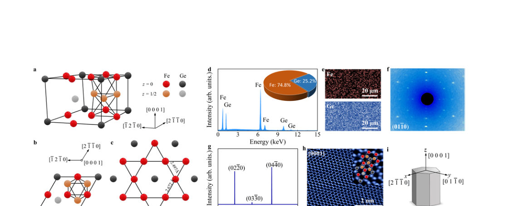
<figcaption class="paper-figure-caption"><b>Fig 1.</b> Figure 1. Crystal structures and characterizations of Fe3Ge. a Crystallographic unit cell of Fe3Ge. Fe and Ge</figcaption>
</figure>
<figure class="paper-figure-card">

<figcaption class="paper-figure-caption"><b>Fig 2.</b> Figure 2. Magneto-transport measurements and band structures of Fe3Ge single crystals. a Temperature-</figcaption>
</figure>
<figure class="paper-figure-card">

<figcaption class="paper-figure-caption"><b>Fig 3.</b> Figure 3. Magnetic properties of Fe3Ge single crystals. a Temperature-dependent magnetization under an applied</figcaption>
</figure>
<figure class="paper-figure-card">
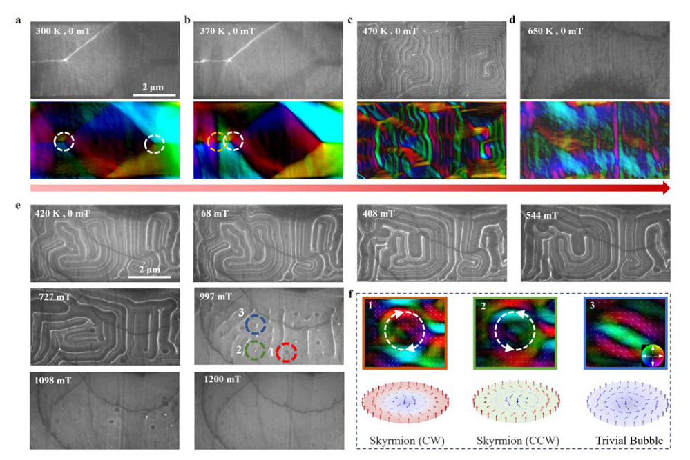
<figcaption class="paper-figure-caption"><b>Fig 4.</b> Figure 4. Spin textures of Fe3Ge single crystals. a-d LTEM images (top row) and the corresponding magnetic</figcaption>
</figure>
<figure class="paper-figure-card">
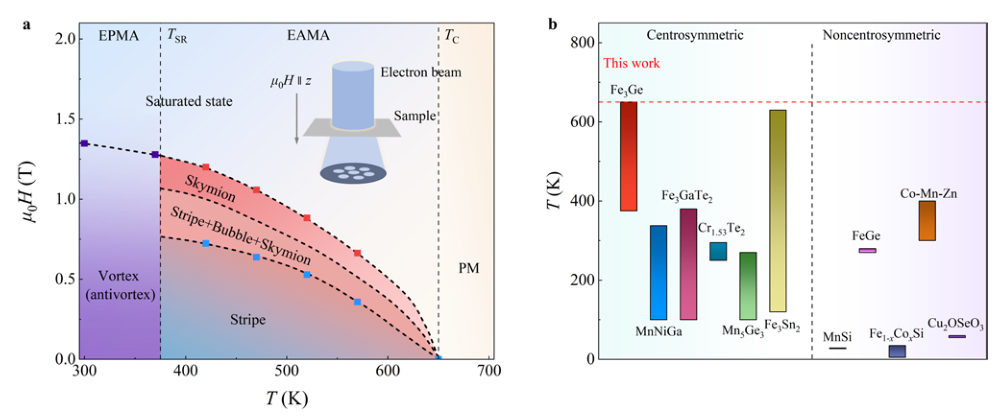
<figcaption class="paper-figure-caption"><b>Fig 5.</b> Figure 5. Magnetic phase diagram. a Magnetic phase diagram of Fe3Ge sketching the evolution of spin textures as</figcaption>
</figure>
</div>
<p><strong>Summary.</strong> This work reports the discovery of robust, high-temperature skyrmions in the Dirac magnet $    ext{Fe}_3   ext{Ge}$. By analyzing magnetic anisotropy crossovers and topological transport measurements, the authors demonstrate that $    ext{Fe}_3   ext{Ge}$ maintains stable skyrmion phases up to its Curie temperature ($\sim 650 	ext{ K}$). This positions the material as a leading candidate for advanced spintronic applications.</p>
<p><strong>Why it may be interesting.</strong> The combination of high Curie temperature, topological electronic structure, and stable magnetic textures makes this material highly relevant for developing next-generation spintronic devices, bridging fundamental condensed matter physics with applied quantum technology.</p>
<details>
<summary>Detailed structure</summary>
<p><strong>Main problem.</strong> The study investigates the interplay between magnetic anisotropy, electronic band topology, and the stability of skyrmions in the Dirac magnet $  ext{Fe}_3   ext{Ge}$.</p>
<p><strong>Main result.</strong> The authors report observing robust skyrmions in $ ext{Fe}_3   ext{Ge}$ that persist over a wide temperature range (375 K to 650 K), establishing it as a promising platform for high-temperature spintronics.</p>
<p><strong>Method.</strong> The research combines experimental techniques like Lorentz TEM and magneto-transport measurements with theoretical calculations using methods like FPLAPW.</p>
<p><strong>Model / system.</strong> The physical system is the $    ext{Fe}_3   ext{Ge}$ single crystal, which possesses a distorted Kagome lattice and exhibits Dirac magnetic properties. The analysis focuses on the magnetic phase transitions and the resulting topological electronic structure.</p>
<p><strong>Key observables.</strong> High Curie temperature ($\sim 650 	ext{ K}$), large intrinsic Anomalous Hall Conductivity ($\sim 380 \ \Omega^{-1}	ext{cm}^{-1}$), Spin Reorientation Transition ($\sim 375 	ext{ K}$), and stable mesoscopic skyrmions.</p>
<p><strong>Important parameters / regimes.</strong> Temperature range (375 K to 650 K), magnetic anisotropy constants ($K_{	ext{eff}}$), and the material's intrinsic electronic topology.</p>
<p><strong>Assumptions / limitations.</strong> The electronic structure is linked to nontrivial band topology, and the magnetic behavior is governed by the crossover between easy-plane and easy-axis anisotropy.</p>
<p><strong>Figures summary.</strong> Figures illustrate crystal structure confirmation (XRD, STEM), transport measurements ($
ho-T$, $
ho_{xy}-H$), magnetic properties ($M-T$, $K_{	ext{eff}}$), and LTEM images visualizing the temperature-dependent spin textures and skyrmions.</p>
<p><strong>Paper structure.</strong> The paper follows a standard structure: structural characterization, measurement of transport and magnetic properties across temperature, identification of the magnetic anisotropy crossover, and finally, visualization and confirmation of high-temperature skyrmion stability using LTEM.</p>
</details>
<details>
<summary>Abstract</summary>
<p>Topological materials that simultaneously host robust high-temperature skyrmions and nontrivial electronic band structures have attracted tremendous interest owing to their distinctive advantages for both fundamental research and prospective technological applications. Here, we report the observation of robust skyrmions in the Dirac kagome magnet Fe3Ge, which exhibits a high Curie temperature of ~ 650 K. At room temperature, Fe3Ge shows a large intrinsic anomalous Hall conductivity of ~ 380 Ω-1cm-1, originating from its nontrivial electronic band topology. Systematic magnetization measurements reveal a spin reorientation transition at ~ 375 K, indicating a crossover from easy-plane to easy-axis magnetic anisotropy. Below the spin reorientation temperature, a large topological Hall effect is observed, arising from microscopic noncoplanar spin structures. Lorentz transmission electron microscopy shows that mesoscopic skyrmions are stabilized in the easy-axis magnetic anisotropy regime and persist over an exceptionally wide temperature window of 375-650 K, far exceeding that of most previously reported skyrmion-hosting materials. These results establish Fe3Ge as a promising platform for exploring diverse topological properties, with strong potential for advancing future high-temperature spintronic applications, ranging from next-generation information storage to logic computing devices.</p>
</details>
<p><sub><a href="#top">↑ back to top</a></sub></p>

<p><a id="paper-2609.10289"></a></p>
<h3 id="on-the-limits-of-quantum-multiparty-simultaneous-communication"><a href="http://arxiv.org/abs/2609.10289v1">On the Limits of Quantum Multiparty Simultaneous Communication</a></h3>
<p><strong>Authors:</strong> Pedro Montealegre, Ivan Rapaport, Jorge Valenzuela<br>
<strong>Type:</strong> theory · <strong>Category:</strong> quantum information and computing · <strong>PDF:</strong> <a href="https://arxiv.org/pdf/2609.10289v1">https://arxiv.org/pdf/2609.10289v1</a><br>
<strong>Analysis basis:</strong> full PDF text, analyzed in chunks</p>
<div class="figure-strip-hint">↔ Scroll figures horizontally</div>
<div class="paper-figures-scroll">
<figure class="paper-figure-card">
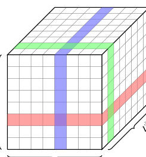
<figcaption class="paper-figure-caption"><b>Fig 1.</b> Figure 1</figcaption>
</figure>
</div>
<p><strong>Summary.</strong> This work rigorously establishes a multipartite exponential separation between classical public randomness and unentangled quantum communication in the SMP model. By generalizing the Index Coordination problem, the authors prove that quantum communication lacks an asymptotic advantage over private randomness in this setting. This demonstrates that quantum superposition cannot efficiently simulate the coordination power of public randomness across multiple parties.</p>
<p><strong>Why it may be interesting.</strong> The results provide fundamental, quantitative limits on how quantum superposition can simulate classical coordination mechanisms, which has implications for quantum cryptography and communication complexity.</p>
<details>
<summary>Detailed structure</summary>
<p><strong>Main problem.</strong> The paper establishes a multiparty exponential separation between classical shared randomness (public coins) and unentangled quantum communication in the Simultaneous Message Passing (SMP) model.</p>
<p><strong>Main result.</strong> It shows that quantum communication without shared entanglement cannot efficiently simulate the coordination provided by public randomness, yielding strong lower bounds scaling as $\Omega(n^{1-1/k})$ in the unambiguous regime.</p>
<p><strong>Method.</strong> The authors use generalizations of state identification theorems, leveraging the factorization of orthogonal complements of subspaces in tensor product settings, combined with information-theoretic inequalities like AM-GM.</p>
<p><strong>Model / system.</strong> The analysis is conducted within the Simultaneous Message Passing (SMP) model, generalizing the Index Coordination problem ($   ext{IC}_{k,n}$) to $k$ spatially separated players communicating to a central referee.</p>
<p><strong>Key observables.</strong> Message length (in bits or qubits), success probability, and the scaling of lower bounds with the number of players ($k$) and input size ($n$).</p>
<p><strong>Important parameters / regimes.</strong> The separation holds for arbitrary $k=k(n)\ge2$, and the complexity matches $\Theta(n)$ when $k$ grows sufficiently fast with $n$.</p>
<p><strong>Assumptions / limitations.</strong> The quantum communication is restricted to unentangled messages (no shared entanglement) and the analysis focuses on the unambiguous and bounded-error regimes.</p>
<p><strong>Figures summary.</strong> Not specified.</p>
<p><strong>Paper structure.</strong> The paper builds upon the two-player Index Coordination separation, generalizes it to $k$ parties ($  ext{IC}_{k,n}$), and derives lower bounds by analyzing the factorization of the orthogonal complement of the 'wrong' subspace in the quantum state space.</p>
</details>
<details>
<summary>Abstract</summary>
<p>The Simultaneous Message Passing (SMP) model provides a fundamental framework for comparing classical and quantum communication. For two players, Gavinsky et al. (STOC 2006) established a separation underlying the incomparability of shared randomness and quantum communication: \textsc{Index Coordination} needs $O(\log n)$ public-coin bits but $Ω(n^{1/3})$ bounded-error qubits.   In this work, we establish a multiparty exponential separation through $\operatorname{IC}_{k,n}$, a natural $k$-party generalization of \textsc{Index Coordination}. Public-coin protocols solve it unambiguously with maximum message length $O(\log n)$ bits. In contrast, quantum SMP protocols without shared entanglement or public coins require maximum message length $Ω(n^{1-1/k})$ qubits in the unambiguous regime and $Ω(n^{(k-1)/(k+1)})$ qubits in the bounded-error regime. A classical private-coin protocol matches the unambiguous bound, so quantum communication provides no asymptotic advantage over private randomness in this regime. For fixed error parameters, all constants are independent of $k$, establishing the exponential separation for every integer-valued function $k=k(n)\ge2$, without restricting its growth. Both quantum lower bounds become $Ω(n)$ when $k\ge c\log n$ for any fixed $c>0$, matching the full-input protocol and yielding tight linear complexity in both regimes.   Our results demonstrate that quantum superposition cannot efficiently simulate the coordination afforded by public randomness, extending this separation to arbitrary $k$. To bound success probabilities for multiparty product states, we prove an exact factorization theorem for unambiguous quantum state identification, which may be of independent mathematical interest.</p>
</details>
<p><sub><a href="#top">↑ back to top</a></sub></p>

<p><a id="paper-2609.10034"></a></p>
<h3 id="one-relative-phase-orders-operational-thresholds-of-noisy-bell-pairs"><a href="http://arxiv.org/abs/2609.10034v1">One Relative Phase Orders Operational Thresholds of Noisy Bell Pairs</a></h3>
<p><strong>Authors:</strong> Xuan Du Trinh<br>
<strong>Type:</strong> theory · <strong>Category:</strong> quantum information and computing · <strong>PDF:</strong> <a href="https://arxiv.org/pdf/2609.10034v1">https://arxiv.org/pdf/2609.10034v1</a><br>
<strong>Analysis basis:</strong> full PDF text, analyzed in chunks</p>
<div class="figure-strip-hint">↔ Scroll figures horizontally</div>
<div class="paper-figures-scroll">
<figure class="paper-figure-card">

<figcaption class="paper-figure-caption"><b>Fig 1.</b> FIG. 1. Schematic cross-section of ability-absence sets for two-qubit states. CHSH-local means that the CHSH value, optimized over local measurement settings, does not exceed the local bound 2. Separable states lie in every depicted set. The teleportation-useless and unsteerable sets lie inside the CHSH-local set [5, 20]. The teleportation-useless and unsteer- able sets overlap without either containing the other [4]. The segment is the Bell-mixing line of Eq. (1) from Φ+ at λ = 1 to σ at λ = 0, and each colored point marks an edge of the cor- responding ability-absence interval. The figure illustrates an example in which σ is steerable and teleportation-useful but CHSH-local. Thus, the...</figcaption>
</figure>
<figure class="paper-figure-card">
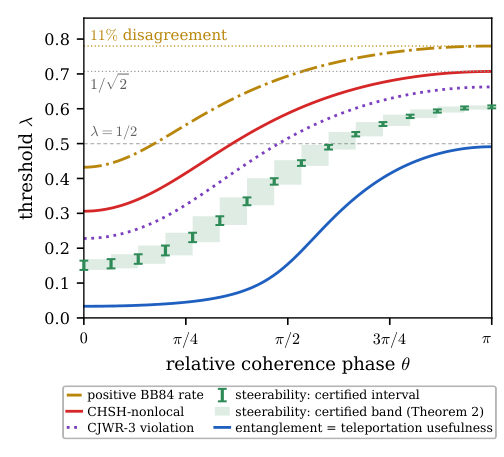
<figcaption class="paper-figure-caption"><b>Fig 2.</b> FIG. 2. The operational thresholds are nondecreasing in the relative coherence phase θ. Analytic curves give the entangle- ment and coincident teleportation usefulness thresholds, the three-setting CJWR witness threshold, the CHSH-nonlocal threshold, and the threshold for a positive key rate in one-way BB84 with CSS codes. The last three are each optimized over the local measurements. At λ = 1</figcaption>
</figure>
</div>
<p><strong>Summary.</strong> This paper develops a general framework to determine the operational thresholds of quantum abilities in noisy Bell pairs. It proves that these thresholds are governed by the X-part of the noise and exhibit a nondecreasing dependence on the relative phase between noise and coherence. This provides powerful tools for certifying quantum capabilities even when closed-form criteria are unknown.</p>
<p><strong>Why it may be interesting.</strong> The rigorous mathematical framework developed for characterizing thresholds based on phase dependence and partial tomography is highly general and applicable to understanding noise resilience in quantum communication protocols.</p>
<details>
<summary>Detailed structure</summary>
<p><strong>Main problem.</strong> The paper determines the operational thresholds at which quantum communication abilities (like entanglement or steerability) are lost in noisy Bell pairs.</p>
<p><strong>Main result.</strong> It establishes a monotonicity law showing that the ability threshold is nondecreasing with the relative phase between the noise and Bell coherences, and that the X-part of the noise provides a tight upper bound on this threshold.</p>
<p><strong>Method.</strong> The analysis uses bounding techniques based on the X-part of the noise and establishes monotonicity laws by analyzing the dependence of the threshold on the relative phase $\theta$.</p>
<p><strong>Model / system.</strong> The system models noisy Bell pairs described by a mixture $\rho_\lambda(\sigma) = \lambda \Phi_+ + (1 - \lambda) \sigma$, where $\sigma$ is the noise state characterized by its X-part $\sigma_X$.</p>
<p><strong>Key observables.</strong> Operational thresholds ($\lambda_K$), the relative phase $\theta$, and the X-part of the noise ($\sigma_X$).</p>
<p><strong>Important parameters / regimes.</strong> Bell weight $\lambda$ ($0 \le \lambda \le 1$) and the relative phase $\theta$ ($0 \le \theta \le \pi$).</p>
<p><strong>Assumptions / limitations.</strong> The analysis assumes the operational ability's failing states form a convex set closed under local unitaries, and it relies on the X-part approximation for bounding.</p>
<p><strong>Figures summary.</strong> Figures illustrate the nondecreasing nature of operational thresholds (e.g., entanglement, CHSH-nonlocal) as a function of the relative phase $\theta$, showing certified intervals for these thresholds.</p>
<p><strong>Paper structure.</strong> The paper first establishes the X-part upper bound and the general monotonicity law for any suitable ability. It then focuses on the phase dependence, proving that the threshold increases monotonically with $\theta$, and finally applies these techniques to specific abilities like steerability.</p>
</details>
<details>
<summary>Abstract</summary>
<p>Unlike the two-qubit entangled and CHSH-nonlocal sets, the steerable and Bell-nonlocal ones have no known general closed-form criterion. For any such operational ability whose failing states form a convex set closed under local unitaries, and for a Bell mixture with arbitrary noise, the $X$ part of the noise gives an upper bound on the definitive threshold, the Bell weight above which the mixture attains the ability. That bound is the tightest that the seven of the fifteen Pauli expectation values fixing the $X$ part can support. The same theorem shows that a state has the ability whenever its $X$ part does, so partial tomography of a state can certify its ability. When noise is of $X$ form, the mixture carries a relative phase between the noise and Bell coherences that cannot be gauged away by local unitaries, and it controls the threshold through interference. We prove a monotonicity law: the threshold is nondecreasing in this phase, whether or not a closed-form criterion for the ability exists.</p>
</details>
<p><sub><a href="#top">↑ back to top</a></sub></p>

<p><a id="paper-2609.10520"></a></p>
<h3 id="private-communication-via-zero-private-capacity-quantum-channels"><a href="http://arxiv.org/abs/2609.10520v1">Private communication via zero-private-capacity quantum channels</a></h3>
<p><strong>Authors:</strong> Chengkai Zhu, Xin Wang<br>
<strong>Type:</strong> theory · <strong>Category:</strong> quantum information and computing · <strong>PDF:</strong> <a href="https://arxiv.org/pdf/2609.10520v1">https://arxiv.org/pdf/2609.10520v1</a><br>
<strong>Analysis basis:</strong> full PDF text, analyzed in chunks</p>
<div class="figure-strip-hint">↔ Scroll figures horizontally</div>
<div class="paper-figures-scroll">
<figure class="paper-figure-card">

<figcaption class="paper-figure-caption"><b>Fig 1.</b> Figure 1: Logical dependencies of the formalized argument for 1/2 ≤p &lt; 1. Arrows run from proof ingredients to conclusions, with each box grouping the relevant Lean declarations. The final capacity statement uses the regularized information formula.</figcaption>
</figure>
</div>
<p><strong>Summary.</strong> This paper tackles the superactivation problem in quantum information by showing that two quantum channels, each individually incapable of supporting private communication, can jointly achieve a positive secure rate. The authors demonstrate this using a specific combination of a four-level and an erasure channel. This result proves that secure communication capacity is not solely determined by the private capacity of the individual channels.</p>
<p><strong>Why it may be interesting.</strong> It provides a deep theoretical result showing that local capacity measures fail to capture global security properties, which is a fundamental concept in quantum communication theory.</p>
<details>
<summary>Detailed structure</summary>
<p><strong>Main problem.</strong> The paper resolves the open problem of whether two quantum channels, each having zero individual private capacity, can jointly enable private communication (superactivation).</p>
<p><strong>Main result.</strong> The joint use of a four-level channel and a qubit erasure channel, both with zero private capacity, achieves a positive private rate, demonstrating that channel private capacity alone is insufficient to determine secure communication capability.</p>
<p><strong>Method.</strong> The analysis uses information-theoretic bounds, specifically Holevo information and entropy calculations, to establish a positive information difference between the received signal and the environmental leakage.</p>
<p><strong>Model / system.</strong> The model involves two independent, memoryless quantum channels: a four-level channel and a qubit erasure channel. The analysis is highly mathematical, involving quantum information theory concepts like private capacity and joint measurements.</p>
<p><strong>Key observables.</strong> Private capacity, information gain $I(U:Y)$, and environmental leakage $\chi(U:E'E)$.</p>
<p><strong>Important parameters / regimes.</strong> The erasure probability $p$ (specifically $1/2 \le p < 1$), and the achievable rate, which is shown to be positive.</p>
<p><strong>Assumptions / limitations.</strong> The result relies on a fixed joint measurement and classical coding across uses, and the formalization is built upon established quantum information theorems.</p>
<p><strong>Figures summary.</strong> Figure 1 summarizes the logical dependencies of the formalized argument for $1/2 \leq p < 1$, detailing proof ingredients and conclusions.</p>
<p><strong>Paper structure.</strong> The paper develops the problem by defining the private capacity, constructing a specific physical example (the two channels), deriving the positive rate through information bounds, and formalizing the entire argument in Lean 4.</p>
</details>
<details>
<summary>Abstract</summary>
<p>Private communication over a noisy quantum channel requires reliable transmission to the receiver and secrecy from the environment. Whether two channels with zero private capacity can jointly enable private communication is a longstanding open problem in quantum information theory. Here we resolve this problem by exhibiting a four-level channel and a qubit erasure channel with half erasure probability, each with zero private capacity, whose joint use achieves more than 0.0001903 private bits per product use. The encoding gives the receiver a linear information gain with at most quadratic environmental leakage, enabling privacy through a fixed joint measurement and classical coding. This superactivation, impossible for independent classical memoryless wiretap channels, shows that a channel's private capacity alone does not determine its value for secure communication. The initial activation example was identified through interactions with large language models, and the result has been formalized in Lean 4.</p>
</details>
<p><sub><a href="#top">↑ back to top</a></sub></p>

<p><a id="paper-2609.10359"></a></p>
<h3 id="quantifying-translational-and-bond-orientational-order-metrics-in-hyperuniform-and-nonhyperuniform-many-particle-systems"><a href="http://arxiv.org/abs/2609.10359v1">Quantifying translational and bond-orientational order metrics in hyperuniform and nonhyperuniform many-particle systems</a></h3>
<p><strong>Authors:</strong> Anirban Mukherjee, Salvatore Torquato<br>
<strong>Type:</strong> theory · <strong>Category:</strong> statistical mechanics · <strong>PDF:</strong> <a href="https://arxiv.org/pdf/2609.10359v1">https://arxiv.org/pdf/2609.10359v1</a><br>
<strong>Analysis basis:</strong> full PDF text, analyzed in chunks</p>
<div class="figure-strip-hint">↔ Scroll figures horizontally</div>
<div class="paper-figures-scroll">
<figure class="paper-figure-card">
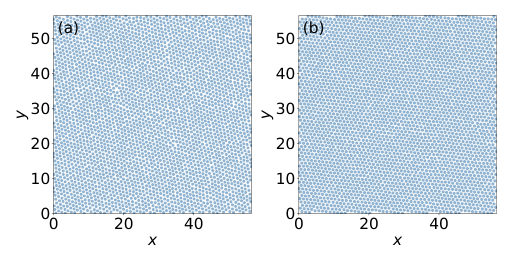
<figcaption class="paper-figure-caption"><b>Fig 1.</b> FIG. 2. Representative crystal-branch configurations of 2D equilibrium hard disks at (a) ϕ = 0.75 and (b) ϕ = 0.81, each displaying the same area and containing approximately 3200 disk centers. The density of lattice defects is lower at the higher packing fraction.</figcaption>
</figure>
<figure class="paper-figure-card">
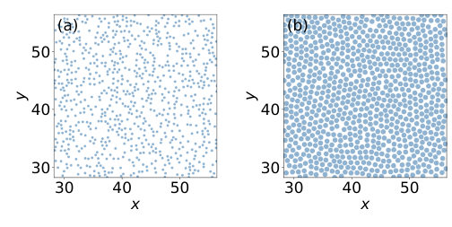
<figcaption class="paper-figure-caption"><b>Fig 2.</b> FIG. 1. Representative fluid-branch configurations of 2D equilibrium hard disks at (a) ϕ = 0.20 and (b) ϕ = 0.68, each displaying the same area and containing approximately 800 disk centers. The higher-packing-fraction configuration exhibits stronger short-range positional correlations.</figcaption>
</figure>
<figure class="paper-figure-card">
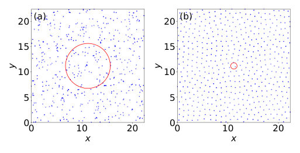
<figcaption class="paper-figure-caption"><b>Fig 3.</b> FIG. 4. Representative 2D disordered SHU ground-state con- figurations at (a) χ = 0.01 and (b) χ = 0.495. Each panel displays the same area and contains approximately 500 points. The circle indicates the stealthy wavelength λ = 2π/K. The greater structural regularity at the larger value of χ is visible.</figcaption>
</figure>
<figure class="paper-figure-card">
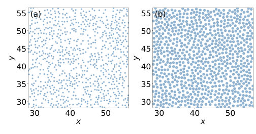
<figcaption class="paper-figure-caption"><b>Fig 4.</b> FIG. 3. Representative 2D RSA hard-disk configurations at (a) ϕ = 0.20 and (b) ϕ = 0.54, each displaying the same area and containing approximately 800 disk centers. The higher- packing-fraction configuration exhibits stronger short-range exclusion-induced correlations.</figcaption>
</figure>
<figure class="paper-figure-card">
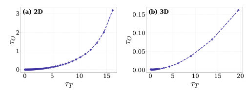
<figcaption class="paper-figure-caption"><b>Fig 5.</b> FIG. 5. Parametric relation between τO and τT along the stable fluid branches of (a) 2D equilibrium hard disks and (b) 3D equilibrium hard spheres. In both dimensions, τO increases monotonically with τT along the sampled branches.</figcaption>
</figure>
</div>
<p><strong>Summary.</strong> This work introduces two metrics, $    au_T$ and $ au_O$, to quantify translational and bond-orientational order in many-particle systems. By applying these metrics to hard-sphere packings and hyperuniform states, the authors demonstrate that structural order is highly dependent on the system's preparation history. The resulting $(	au_T, 	au_O)$ pair offers a versatile tool for characterizing phase transitions and structural pathways in condensed matter physics.</p>
<p><strong>Why it may be interesting.</strong> The development of robust, quantifiable metrics like $(	au_T, 	au_O)$ provides a powerful, generalized coordinate system for mapping complex phase diagrams, which is highly relevant for understanding structural transitions in soft matter and amorphous materials.</p>
<details>
<summary>Detailed structure</summary>
<p><strong>Main problem.</strong> The paper addresses the fundamental challenge of quantifying the degree of structural order (both translational and bond-orientational) in complex many-particle systems.</p>
<p><strong>Main result.</strong> The pair of metrics $(	au_T, 	au_O)$ successfully places both forms of order on a common statistical footing, revealing preparation-dependent structural differences between equilibrium and non-equilibrium states.</p>
<p><strong>Method.</strong> The authors introduce and compute two metrics: $    au_T$ (based on the total correlation function $h(r)$) and $  au_O$ (its bond-orientational analogue), both defined via squared $L^2$ norms in real or Fourier space.</p>
<p><strong>Model / system.</strong> The study analyzes sphere-packing models (hard spheres/disks) in 2D and 3D, comparing equilibrium states, non-equilibrium Random Sequential Addition (RSA) packings, and disordered stealthy hyperuniform (SHU) ground states.</p>
<p><strong>Key observables.</strong> Translational order metric ($  au_T$), Bond-orientational order metric ($    au_O$), and the ratio $ au_O/   au_T$.</p>
<p><strong>Important parameters / regimes.</strong> Packing fraction ($\phi$), stealthiness parameter ($\chi$), and system dimensionality (2D vs 3D).</p>
<p><strong>Assumptions / limitations.</strong> The metrics are constructed from two-point correlation functions, and the analysis often requires careful handling of system size cutoffs ($L$) and wavevector cutoffs ($K_c$).</p>
<p><strong>Figures summary.</strong> Figures compare correlation functions and structure factors ($S(k)$ vs $SO(k)$) across various phases (fluid, crystal, SHU) and demonstrate the system-size dependence of the metrics.</p>
<p><strong>Paper structure.</strong> The paper introduces the metrics, applies them to nonhyperuniform systems (hard spheres/disks) to show preparation dependence, examines the SHU phase, and concludes by establishing the positive correlation between $    au_T$ and $ au_O$ across all studied regimes.</p>
</details>
<details>
<summary>Abstract</summary>
<p>Quantifying the degree of order/disorder in many-particle systems remains an outstanding problem in physics, materials science, and mathematics. To this end, we consider the translational order metric $τ_T$, defined as the squared $L^2$ norm of the total correlation function $h(\mathbf{r})$, and introduce its bond-orientational analogue $τ_O$, defined from the weighted total correlation function $h_{\mathbf{f}}(\mathbf{r})$ using local orientational weights (S. Torquato et al., Phys. Rev. X 16, 011042 (2026)). The pair $(τ_T,τ_O)$ places both forms of order on a common two-point statistical footing. We compute both metrics for two nonhyperuniform sphere-packing models in 2D and 3D as functions of packing fraction $φ$: 1) equilibrium hard particles and 2) nonequilibrium random sequential addition (RSA) packings. For the nonhyperuniform systems, bond-orientational order remains subdominant along the equilibrium-fluid and RSA configurations; however, its magnitude relative to the translational metric increases near the upper end of the equilibrium-fluid branches, much more strongly in 2D than in 3D, and the two metrics become comparable along the sampled crystal branches. At common packing fractions, equilibrium fluids and RSA packings trace distinct $(τ_T,τ_O)$ trajectories, revealing preparation-dependent differences in structural order. As a representative hyperuniform family, we study 2D disordered stealthy hyperuniform (SHU) ground states for $0<χ<1/2$, where $χ$ is the stealthiness parameter. Within the disordered SHU phase, bond-orientational order remains subdominant, but its magnitude relative to the translational metric increases toward the disorder-to-order threshold. In all three models, $τ_T$ and $τ_O$ are positively correlated beyond the Poisson-reference regime: $τ_O$ increases monotonically with $τ_T$ across the sampled state points.</p>
</details>
<p><sub><a href="#top">↑ back to top</a></sub></p>

<p><a id="paper-2609.09781"></a></p>
<h3 id="semi-dirac-states-and-quantum-linear-magnetoresistance-in-helimagnetic-pnictide-mnp"><a href="http://arxiv.org/abs/2609.09781v1">Semi-Dirac States and Quantum Linear Magnetoresistance in Helimagnetic Pnictide MnP</a></h3>
<p><strong>Authors:</strong> Prasanta Chowdhury, Jyotirmoy Sau, Sanat Kumar Adhikari, Sourav Chowdhury, Peter Bencok, Matthias Gutmann, Souvik Chatterjee, Saurav Giri, Manoranjan Kumar, Subham Majumdar<br>
<strong>Type:</strong> both · <strong>Category:</strong> strongly correlated electrons · <strong>PDF:</strong> <a href="https://arxiv.org/pdf/2609.09781v1">https://arxiv.org/pdf/2609.09781v1</a><br>
<strong>Analysis basis:</strong> full PDF text, analyzed in chunks</p>
<div class="figure-strip-hint">↔ Scroll figures horizontally</div>
<div class="paper-figures-scroll">
<figure class="paper-figure-card">
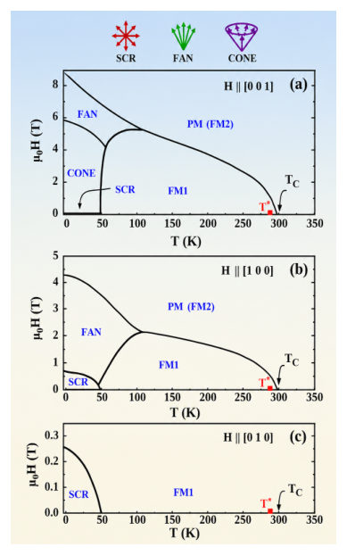
<figcaption class="paper-figure-caption"><b>Fig 1.</b> FIG. 1. Phase diagram. (a), (b) and (c) Shows the standard phase diagram (µ0H vs T) of MnP for field applied along [0 0 1], [1 0 0] and [0 1 0] direction with different magnetic phase marked.</figcaption>
</figure>
<figure class="paper-figure-card">

<figcaption class="paper-figure-caption"><b>Fig 2.</b> FIG. 2. Structural characterization of single-crystalline MnP. (a) Crystal structure of MnP. (b) and (c) Observed (Fobs) vs calculated (Fcalc) structure factors of SCXRD data at T = 295 K and T = 30 K respectively. (d) XRD pattern of single crystalline MnP showing (h 0 l) diffraction peaks. (e) Enlarged HRTEM image displaying (1 0 2) plane. (f) SAED pattern displaying different planes.</figcaption>
</figure>
<figure class="paper-figure-card">
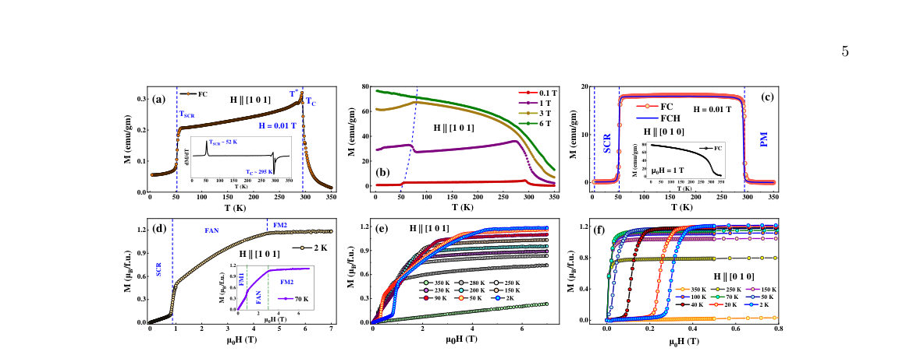
<figcaption class="paper-figure-caption"><b>Fig 3.</b> FIG. 3. Magnetic properties of MnP. (a) Temperature (T) dependence of magnetization (M) in field-cooled (FC) protocols under µ0H= 0.01 T. The inset shows the temperature derivative of M(T) for µ0H ∥[1 0 1] direction. (b) M vs. T data under different fields (µ0H=0.1 T, 1 T, 3 T, 6 T) for µ0H ∥[1 0 1] direction. (c) M vs. T data in field-cooled (FC) and field-cooled-heating (FCH) protocol under µ0H= 0.01 T for µ0H ∥[0 1 0] direction and the inset shows the FC curve under µ0H= 1 T. (d) M vs. µ0H curve at 2 K for µ0H ∥[1 0 1] direction and the inset shows M vs. µ0H curve at 70 K. (e) M vs. µ0H curve at different constant T with µ0H ∥[1 0 1] direction. (f) M vs. µ0H curve at different constant T...</figcaption>
</figure>
<figure class="paper-figure-card">

<figcaption class="paper-figure-caption"><b>Fig 4.</b> FIG. 4. XAS and XMCD of MnP. (a) Mn L2,3-edge XAS and XMCD spectra of MnP measured at 20 K with µ0H ∥ [1 0 1]. (b) Comparison of the Mn L2,3-edge XAS spectra of MnP, MnO, and Mn2O3. (c) Mn L2,3-edge XMCD spectra measured at 20, 50, and 100 K. (d) Comparison of the field dependence of the Mn L3-edge XMCD intensity (left panel) and the bulk magnetization (right panel) measured at 50 K.</figcaption>
</figure>
<figure class="paper-figure-card">
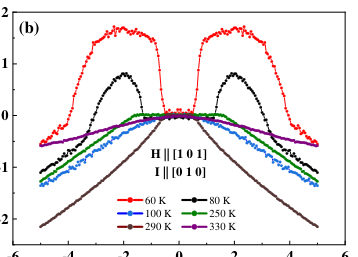
<figcaption class="paper-figure-caption"><b>Fig 5.</b> FIG. 6. Magnetoresistance of MnP. (a) Shows the MR % vs µ0H data at different constant T measured between ±15 T with different region marked. (b) Shows MR % vs µ0H data for T &gt; 50 K measured between ±5 T.</figcaption>
</figure>
</div>
<p><strong>Summary.</strong> This work investigates the large linear magnetoresistance observed in the helimagnetic pnictide MnP. By combining detailed magnetotransport experiments with first-principles calculations, the authors propose that the effect arises from a small, semi-Dirac-like Fermi pocket that becomes accessible under high magnetic fields. This provides a quantum-mechanical framework for understanding magnetotransport in complex magnetic topological materials.</p>
<p><strong>Why it may be interesting.</strong> The strong coupling between complex magnetism (noncollinear spins) and electronic transport (MR) is a hallmark of strongly correlated electron systems, providing a concrete platform to test theories of quantum transport in magnetic materials.</p>
<details>
<summary>Detailed structure</summary>
<p><strong>Main problem.</strong> The paper investigates the origin of large linear positive magnetoresistance (LPMR) in complex magnetic materials, specifically addressing the role of spin-dependent scattering in noncollinear spin systems.</p>
<p><strong>Main result.</strong> The observed LPMR is microscopically explained by a small Fermi pocket formed by a semi-Dirac-like band crossing near the Y point, which allows the system to access the extreme quantum-limit regime.</p>
<p><strong>Method.</strong> The study combines comprehensive experimental magnetotransport measurements (Hall, MR) with first-principles electronic structure calculations.</p>
<p><strong>Model / system.</strong> The physical system is Manganese phosphide (MnP), a helimagnetic binary pnictide exhibiting multiple field-induced magnetic transitions (SCR, FAN, FM2).</p>
<p><strong>Key observables.</strong> Large, non-saturating LPMR (up to 800%), Anomalous Hall Effect (AHE), Topological Hall Effect (THE), and the evolution of the semi-Dirac-like band structure.</p>
<p><strong>Important parameters / regimes.</strong> Low temperatures ($4 	ext{ K}$), high magnetic fields ($15 	ext{ T}$), and the magnetic phase transitions (SCR $ o$ FAN $    o$ FM2).</p>
<p><strong>Assumptions / limitations.</strong> The LPMR is modeled using Abrikosov's quantum magnetoresistance theory, and the electronic structure is derived from first-principles calculations.</p>
<p><strong>Figures summary.</strong> Figures detail the magnetic phase diagram, structural characterization (XRD, TEM), and magnetotransport measurements showing the field dependence of MR.</p>
<p><strong>Paper structure.</strong> The paper follows a structure of characterizing the complex magnetic phase diagram using structural and magnetization measurements, followed by detailed magnetotransport measurements, and concluding with theoretical calculations linking the observed MR to the electronic band structure.</p>
</details>
<details>
<summary>Abstract</summary>
<p>Large linear positive magnetoresistance (LPMR) in topological and magnetic materials remains a subject of intense debate, particularly in noncollinear spin systems where spin-dependent scattering complicates charge transport. Manganese phosphide (MnP), a helimagnetic binary pnictide with multiple field-induced magnetic transitions, provides a useful platform to investigate the interplay between complex magnetism and electronic topology. Here, we present a comprehensive experimental and theoretical investigation of phase-dependent magnetotransport in high-quality MnP single crystals. Hall measurements reveal an anomalous Hall effect dominated by skew scattering at high temperatures and a finite topological Hall effect in the noncollinear fan (FAN) and low-temperature screw (SCR) phases. At low temperatures, we observe a large, non-saturating LPMR reaching nearly 800 percent at 4 K and 15 T, with a pronounced linear field dependence in the field-polarized ferromagnetic (FM2) state. First-principles calculations reveal a strongly anisotropic semi-Dirac-like band at the Y point that progressively approaches the Fermi level from the SCR to FAN and FM2 states. Our analysis indicates that the resulting small Fermi pocket can access the extreme quantum-limit regime at experimentally accessible fields, providing a microscopic framework for the observed LPMR within Abrikosov's quantum magnetoresistance theory.</p>
</details>
<p><sub><a href="#top">↑ back to top</a></sub></p>

<p><a id="paper-2609.09847"></a></p>
<h3 id="simple-qkd-keyrate-computations-from-tangent-line-bounds"><a href="http://arxiv.org/abs/2609.09847v1">Simple QKD keyrate computations from tangent-line bounds</a></h3>
<p><strong>Authors:</strong> Jun Hui Goh, Ernest Y. -Z. Tan<br>
<strong>Type:</strong> theory · <strong>Category:</strong> quantum information and computing · <strong>PDF:</strong> <a href="https://arxiv.org/pdf/2609.09847v1">https://arxiv.org/pdf/2609.09847v1</a><br>
<strong>Analysis basis:</strong> full PDF text, analyzed in chunks</p>
<div class="figure-strip-hint">↔ Scroll figures horizontally</div>
<div class="paper-figures-scroll">
<figure class="paper-figure-card">
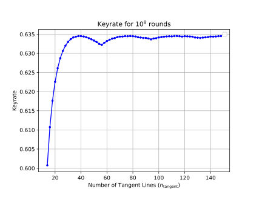
<figcaption class="paper-figure-caption"><b>Fig 1.</b> FIG. 1. Keyrate as a function of the number of tangent lines. The grid search used to plot this graph was 40 × 40. The plot is not monotone because for each ntangent we took the tangent lines at uniformly spaced points over Q ∈[0, 1], which results in the set of tangent lines for each ntangent not being a subset of those for ntangent + 1.</figcaption>
</figure>
<figure class="paper-figure-card">

<figcaption class="paper-figure-caption"><b>Fig 2.</b> FIG. 2. Plot of keyrate value as the grid size of the grid search increases. 100 tangent lines were used in the approximation of the convex optimisation.</figcaption>
</figure>
<figure class="paper-figure-card">

<figcaption class="paper-figure-caption"><b>Fig 3.</b> FIG. 3. Plot comparing the achievable keyrate com- puted by the original authors to that computed by our proposed methodology, using the values of α and γ found in [1]. The purple graph plots the values com- puted by the original authors. The blue graph plots the val- ues computed using the proposed methodology, with the val- ues of α and γ found in [1]. The dashed black line shows the asymptotic keyrate for our parameter choices, which is rasymp = 0.663. We caution however that the results dis- played for n &lt;∼104 (red region in figure) may correspond to significant abort probability during error correction; see Re- mark 1.</figcaption>
</figure>
<figure class="paper-figure-card">
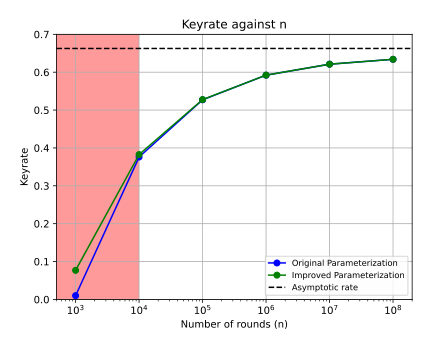
<figcaption class="paper-figure-caption"><b>Fig 4.</b> FIG. 4. Plot comparing the achievable keyrate com- puted by our proposed methodology, including the grid search to find the optimal value of γ and α, using different parametrisation of β and Kα. The blue graph plots the values computed using (6). The green graph plots the values computed using (7). The dashed black line shows the asymptotic keyrate for our parameter choices, which is rasymp = 0.663. We caution however that the results dis- played for n &lt;∼104 (red region in figure) may correspond to significant abort probability during error correction; see Re- mark 1.</figcaption>
</figure>
<figure class="paper-figure-card">

<figcaption class="paper-figure-caption"><b>Fig 5.</b> FIG. 5. Plot of the optimal ∆α against the number of rounds. Linear regression was performed on the values and a R2-value of 0.9965 was found.</figcaption>
</figure>
</div>
<p><strong>Summary.</strong> This paper develops a computationally efficient method to calculate the finite-size keyrates for QKD protocols by reformulating the problem as a convex optimization solvable via tangent-line approximations. By applying this technique to BB84 and the six-state protocol, the authors provide certified lower bounds for the keyrate, simplifying complex calculations previously requiring elaborate solvers.</p>
<p><strong>Why it may be interesting.</strong> While focused on QKD, the mathematical techniques—convex optimization bounding via tangent lines—are highly relevant to finding rigorous bounds in complex quantum information tasks.</p>
<details>
<summary>Detailed structure</summary>
<p><strong>Main problem.</strong> The paper addresses the computational challenge of finding certified lower bounds for the finite-size keyrates in Quantum Key Distribution (QKD) protocols.</p>
<p><strong>Main result.</strong> The authors propose a tractable method using tangent-line approximations to compute these keyrates for basic protocols like BB84 and the six-state protocol, yielding results comparable to previous work.</p>
<p><strong>Method.</strong> The core method involves reformulating the keyrate calculation as a convex optimization problem and then employing tangent-line lower bounding techniques to solve it using off-the-shelf solvers.</p>
<p><strong>Model / system.</strong> The analysis is applied to QKD protocols, specifically focusing on the qubit BB84 and the six-state protocol, analyzed in an entanglement-based setting.</p>
<p><strong>Key observables.</strong> Finite-size keyrate ($\ell_{key}$), asymptotic keyrate ($  ext{r}<em _uparrow="\uparrow">{asymp}$), and various Rényi entropy terms ($  ilde{H}</em>$).}^{\alpha},    ilde{H}_{\downarrow}^{\alpha</p>
<p><strong>Important parameters / regimes.</strong> The security parameter $\epsilon_{secure}$, the order of the Rényi entropy $\alpha$, and protocol-specific parameters like $Q_{thresh}$ and $\gamma$.</p>
<p><strong>Assumptions / limitations.</strong> The method relies on obtaining suitable tangent lines to lower bound terms, which provides a guaranteed lower bound on the true keyrate.</p>
<p><strong>Figures summary.</strong> Figures show the keyrate dependence on the number of tangent lines and the grid size, indicating that plateaus are reached when sufficient computational resources are used.</p>
<p><strong>Paper structure.</strong> The paper first introduces the problem of keyrate computation, then details the tangent-line approximation method for simple protocols, and finally extends the approach by deriving closed-form expressions for the six-state protocol's Rényi entropies.</p>
</details>
<details>
<summary>Abstract</summary>
<p>Recent work in quantum key distribution (QKD) has yielded finite-size keyrates based on convex optimisation problems, using the framework of entropy accumulation. Multiple solvers have been developed to address these optimisations in recent years, but have been based on a somewhat elaborate framework using sophisticated algorithms, in order to accommodate a broad range of QKD protocols. In this work, we note that for basic QKD protocols such as qubit BB84, the keyrates can be easily computed using off-the-shelf solvers instead, by obtaining suitable tangent lines to lower bound terms in the objective function. We compute the resulting finite-size keyrates and compare them to previous work. Moreover, we extend this approach to the six-state protocol, by deriving closed-form expressions for the single-round Rényi entropies in the protocol. This should facilitate subsequent study of the six-state protocol via entropy accumulation.</p>
</details>
<p><sub><a href="#top">↑ back to top</a></sub></p>

<p><a id="paper-2609.10282"></a></p>
<h3 id="solving-wave-propagation-problems-via-geometric-quantum-state-preparation-on-dispersion-manifolds"><a href="http://arxiv.org/abs/2609.10282v1">Solving wave propagation problems via geometric quantum state preparation on dispersion manifolds</a></h3>
<p><strong>Authors:</strong> Yakov Solomons, Lee Peleg, Netanel Barel, Jonathan Nemirovsky, Amit Ben-Kish, Yotam Shapira<br>
<strong>Type:</strong> theory · <strong>Category:</strong> quantum information and computing · <strong>PDF:</strong> <a href="https://arxiv.org/pdf/2609.10282v1">https://arxiv.org/pdf/2609.10282v1</a><br>
<strong>Analysis basis:</strong> full PDF text, analyzed in chunks</p>
<div class="figure-strip-hint">↔ Scroll figures horizontally</div>
<div class="paper-figures-scroll">
<figure class="paper-figure-card">

<figcaption class="paper-figure-caption"><b>Fig 1.</b> FIG. 1. Quantum implementation of the inverse operator for the screened Poisson equation in Fourier space. The Quantum Fourier Transform (QFT) maps the state to the momentum basis, where the differential operator becomes diagonal, this corresponds to the U operation in the main text . In this basis, inversion reduces to evaluating the scalar function q(k) = 1/(k2 +C), (16). This value is computed by quantum arithmetic and then encoded into an auxiliary qubit amplitude through a controlled rotation, (17), producing the state q(k) |0⟩+ p</figcaption>
</figure>
<figure class="paper-figure-card">
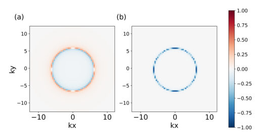
<figcaption class="paper-figure-caption"><b>Fig 2.</b> FIG. 2. Illustration of the (a) real and (b) imaginary parts of Eq. (20), corresponding to the principal-value and delta- function contributions, respectively. The computation is per- formed on a discretized 64 × 64 grid over a square domain of side length L = 16λ, where λ denotes the wavelength. As seen, both terms are concentrated around the dispersion sur- face k2 = ω2/c2 = 2π/λ. Here, ϵ = 3∆kω/c</figcaption>
</figure>
<figure class="paper-figure-card">

<figcaption class="paper-figure-caption"><b>Fig 3.</b> FIG. 3. Quantum circuit for the geometric quantum state preparation algorithm. The momentum registers are first initialized in the resonant state by the state-preparation procedure described in Appendix A. The source-dependent phase encoding, highlighted by the dashed box, is then implemented by controlled phase gates that apply the phases ei(kxxj+kyyj). Finally, after unpreparing the source register and post-selecting it onto |0⟩⊗m, inverse quantum Fourier transform (iQFT) is applied to the momentum registers, yielding the solution state |u(x, y)⟩.</figcaption>
</figure>
<figure class="paper-figure-card">

<figcaption class="paper-figure-caption"><b>Fig 4.</b> FIG. 4. Accuracy of the resonant-ring approximation. (a) Total overlap error, 1 −|⟨uC|uQ⟩|, between the normalized classical solution |uC⟩and the state |uQ⟩obtained from the resonant-ring approximation, as a function of the ring width, computed on a 64 × 64 spatial grid. The highlighted point corresponds to the simulation of Fig. 6. (b) Error in the real and imaginary parts of the solution, corresponding to the real (principal-value) and imaginary (delta-function) parts of q(k), respectively.</figcaption>
</figure>
<figure class="paper-figure-card">
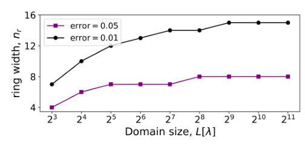
<figcaption class="paper-figure-caption"><b>Fig 5.</b> FIG. 5. Minimum resonant-ring width required to achieve target approximation errors of 0.05 and 0.01 as a function of the computational domain size. The slight increase for the smallest domains is due to the coarse Fourier discretization. At higher resolution, the required ring width approaches a constant value, indicating independence from the domain size.</figcaption>
</figure>
</div>
<p><strong>Summary.</strong> This paper presents a quantum algorithm to solve wave propagation problems by bypassing the limitations of standard quantum linear system solvers. Instead of inverting the full operator, the authors directly prepare quantum states supported on the resonant manifold defined by the wave equation's dispersion relation. This novel geometric approach removes exponential overhead, making the computation feasible regardless of the physical domain size.</p>
<p><strong>Why it may be interesting.</strong> This work provides a concrete quantum algorithmic pathway for solving fundamental PDEs in physics (like wave equations) that are notoriously difficult for standard quantum linear solvers due to spectral singularities.</p>
<details>
<summary>Detailed structure</summary>
<p><strong>Main problem.</strong> The paper addresses the challenge of solving wave propagation partial differential equations (PDEs) using quantum algorithms, specifically overcoming the exponential inefficiency encountered when dealing with singular operators.</p>
<p><strong>Main result.</strong> By developing a method of geometric quantum state preparation directly on the resonant manifold, the authors eliminate the exponential overhead associated with post-selection, leading to a success probability independent of the computational domain size.</p>
<p><strong>Method.</strong> The approach reformulates the problem from inverting the full discretized operator to preparing a quantum state whose support is restricted to the known resonant manifold, utilizing quantum comparators and arithmetic circuits.</p>
<p><strong>Model / system.</strong> The model is wave propagation, exemplified by the Helmholtz equation, which is discretized into a linear system. The core difficulty arises from the singularity of the inverse operator on the dispersion surface $k^2 = \omega^2/c^2$.</p>
<p><strong>Key observables.</strong> Success probability ($P_{	ext{succ}}$) for state preparation, which is shown to scale favorably with the number of sources and independently of domain size.</p>
<p><strong>Important parameters / regimes.</strong> The condition number $\kappa(A)$ of the discretized operator, the resonant manifold itself, and the source location encoding via Fourier phases.</p>
<p><strong>Assumptions / limitations.</strong> The method assumes the hyperbolic PDE solutions possess singular support on lower-dimensional dispersion manifolds, allowing for geometric state preparation.</p>
<p><strong>Figures summary.</strong> Figures illustrate the quantum circuits for preparing states corresponding to geometric shapes, such as the Midpoint (Bresenham) circle algorithm and a finite-width resonant ring in momentum space.</p>
<p><strong>Paper structure.</strong> The paper first contrasts standard Quantum Linear System Solvers (QLSS) with the wave equation's singular structure. It then introduces the novel geometric state preparation technique, detailing the quantum circuits required to construct states supported only on the resonant manifold, culminating in the derivation of the size-independent success probability.</p>
</details>
<details>
<summary>Abstract</summary>
<p>We present a quantum algorithm for solving partial differential equations through a linear-system formulation, focusing on wave propagation problems described by the discretized Helmholtz equation in frequency domain. Although quantum linear-system solvers offer exponential compression of the system degrees of freedom, their runtime complexity is generally governed by the condition number of the discretized operator. Exploiting the analytic structure of the differential operator can provide an alternative to explicit matrix inversion, as illustrated for the screened Poisson equation through an explicit quantum circuit. For the Helmholtz equation, however, the inverse operator becomes singular on the dispersion surface $k^2=ω^2/c^2$, rendering direct Fourier-space state-preparation methods exponentially inefficient. We address this challenge by directly preparing quantum states supported on the resonant manifold and encoding source locations through Fourier phases. The resulting algorithm eliminates the exponentially large overhead associated with post-selection on the resonant manifold, yielding a success probability that depends linearly on the number of sources and is independent of the computational domain size. More generally, our approach applies to hyperbolic differential equations whose Fourier-space solutions possess singular support on dispersion manifolds, recasting their solution as a problem of geometric quantum state preparation.</p>
</details>
<p><sub><a href="#top">↑ back to top</a></sub></p>

<p><a id="paper-2609.09269"></a></p>
<h3 id="the-geometry-of-transport-in-quantum-walks-and-parrondos-paradox"><a href="http://arxiv.org/abs/2609.09269v1">The Geometry of Transport in Quantum Walks and Parrondo's Paradox</a></h3>
<p><strong>Authors:</strong> Jose Alfredo de Leon, Mariana Pérez-Muralles, Jan Neuser, Carlos Pineda<br>
<strong>Type:</strong> theory · <strong>Category:</strong> statistical mechanics · <strong>PDF:</strong> <a href="https://arxiv.org/pdf/2609.09269v1">https://arxiv.org/pdf/2609.09269v1</a><br>
<strong>Analysis basis:</strong> full PDF text, analyzed in chunks</p>
<div class="figure-strip-hint">↔ Scroll figures horizontally</div>
<div class="paper-figures-scroll">
<figure class="paper-figure-card">
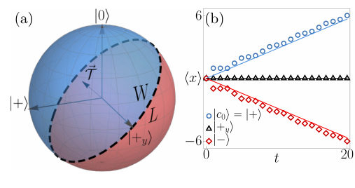
<figcaption class="paper-figure-caption"><b>Fig 1.</b> Figure 1. (a) Bloch sphere for a Hadamard DTQW, divided by great circle (dashed) into winning (blue, W) and losing (red, L) hemispheres of initial states ⃗r0, based on the sign of the asymptotic velocity v = ⃗T · ⃗r0; the arrow marks the transport vector ⃗T . (b) Mean position ⟨x⟩versus time t for three representative initial states, one selected from the win- ning hemisphere, the losing hemisphere, and the null equator in (a): |+⟩(blue), |+y⟩(black), and |−⟩(red), respectively. Solid lines denote the asymptotic prediction vt.</figcaption>
</figure>
<figure class="paper-figure-card">
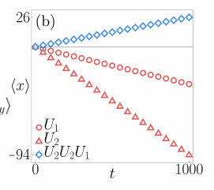
<figcaption class="paper-figure-caption"><b>Fig 2.</b> Figure 3. (a) Outcome map on the Bloch sphere of initial states ⃗r0 for U1, U2 randomly chosen, and their three-step al- ternation U2U2U1. The zero-drift great circles v = ⃗T (U)·⃗r0 = 0 partition the Bloch sphere into winning and losing initial states for U1 (dashed), U2 (dash-dotted), and U2U2U1 (solid). Solid and stippled regions indicate intuitive and paradoxical outcomes, respectively, following the colouring of the inset in Fig. 2. In particular, the stippled red region corresponds to L ◦L = W. (b) Mean position for an initial state in this region: U1 and U2 are losing (open red markers), whereas the minimal three-step alternation U2U2U1 is winning (open blue diamonds).</figcaption>
</figure>
<figure class="paper-figure-card">
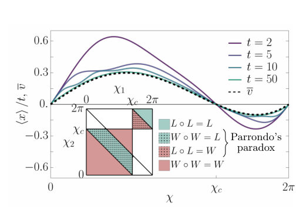
<figcaption class="paper-figure-caption"><b>Fig 3.</b> Figure 2. DTQWs with initial coin state |c0⟩= (|0⟩+ eiπ/4 |1⟩)/ √</figcaption>
</figure>
<figure class="paper-figure-card">
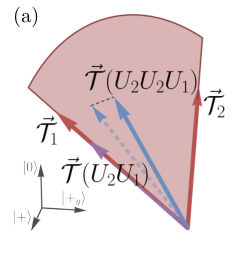
<figcaption class="paper-figure-caption"><b>Fig 4.</b> Figure 4. (a) Pointed convex cone K = cone{⃗T1, ⃗T2} generated by the individual transport vectors ⃗Ti = ⃗T (Ui), with U1 and U2 the same operators as in Fig. 3. The transport vector ⃗T4 = ⃗T (U2U1) lies inside K, collinear with ⃗T1, whereas ⃗T3 = ⃗T (U2U2U1) lies outside. (b) The same cone embedded in the Bloch sphere. A plane through the origin separates ⃗T3 from K; it is viewed edge-on and therefore appears as a black line. Its normal ˆn defines an initial-state direction for which ⃗T3 · ˆn has the opposite sign to ⃗Ti · ˆn for every i.</figcaption>
</figure>
</div>
<p><strong>Summary.</strong> This work applies the concept of Parrondo's paradox to quantum walks, establishing a geometric criterion based on the 'transport vector' to predict when combining simple quantum operations yields unexpectedly directional motion. It shows that this paradox is possible through coin composition but not through simple alternation, providing a deep structural insight into quantum transport design.</p>
<p><strong>Why it may be interesting.</strong> The geometric interpretation of quantum transport and the connection to classical paradoxes like Parrondo's are highly relevant to understanding non-equilibrium dynamics and directional transport in quantum systems.</p>
<details>
<summary>Detailed structure</summary>
<p><strong>Main problem.</strong> The paper investigates Parrondo's paradox—where combining losing strategies yields a winning one—within the framework of discrete-time quantum walks.</p>
<p><strong>Main result.</strong> The paradox is characterized by a geometric condition: it occurs if and only if the transport vector of the combined strategy falls outside the cone spanned by the individual transport vectors. This can happen via coin composition but not via simple alternation.</p>
<p><strong>Method.</strong> The analysis uses the transport vector, derived from Fourier space analysis, to determine the asymptotic velocity of the quantum walker. The paradox is analyzed by comparing the combined transport vector against the cone generated by individual vectors.</p>
<p><strong>Model / system.</strong> The model is a one-dimensional discrete-time quantum walk (DTQW) on a lattice, evolving via a unitary step operator $U=SC$. The dynamics are analyzed using the Bloch sphere representation for the coin state.</p>
<p><strong>Key observables.</strong> Asymptotic velocity ($v$), Transport Vector ($\vec{T}$), and the probability of paradoxical outcomes ($P(L \circ L = W)$ vs $P(L)^2$).</p>
<p><strong>Important parameters / regimes.</strong> The initial coin state Bloch vector ($\vec{r}_0$), the structure of the coin operators ($C_1, C_2$), and the combination protocol (composition vs. alternation).</p>
<p><strong>Assumptions / limitations.</strong> The analysis focuses on the long-time limit (asymptotic behavior) and assumes the initial state is separable. The general criterion relies on the assumption that no coin operator is antidiagonal.</p>
<p><strong>Figures summary.</strong> Figures illustrate the Bloch sphere division into winning/losing hemispheres based on the sign of $v = \vec{T} \cdot \vec{r}_0$. They also map out outcome regions for different combination protocols, showing where the paradox occurs.</p>
<p><strong>Paper structure.</strong> The paper first introduces the transport vector and the paradox criterion. It then compares the paradox's emergence under coin composition versus step alternation, deriving explicit probabilities for the paradoxical set. Finally, it relates the asymptotic velocity to the coin's steady-state Bloch vector.</p>
</details>
<details>
<summary>Abstract</summary>
<p>We study Parrondo's paradox -- the phenomenon where combining losing strategies yields a winning one -- in a minimal discrete-time quantum walk. We introduce the transport vector, encoded in the coin's steady state, whose inner product with the initial coin state gives the walker's asymptotic velocity. More generally, the paradox emerges exactly when the transport vector of the combined strategy falls outside the cone spanned by the individual ones -- a geometric criterion valid for any combination of strategies. It explains, for instance, why composing two coin operators within a single step can produce the paradox while simple alternation between them cannot, since alternation keeps the combined vector confined to the cone. The paradoxical set has nonzero measure, and we compute its probability explicitly in representative cases. This casts the paradox as one instance of designing reachable transport in quantum walks.</p>
</details>
<p><sub><a href="#top">↑ back to top</a></sub></p>

<p><a id="paper-2609.09287"></a></p>
<h3 id="two-magnon-response-from-light-scattering-in-altermagnets"><a href="http://arxiv.org/abs/2609.09287v1">Two-magnon response from light scattering in altermagnets</a></h3>
<p><strong>Authors:</strong> Shuyi Li, Lexu Zhao, Chunjing Jia<br>
<strong>Type:</strong> theory · <strong>Category:</strong> strongly correlated electrons · <strong>PDF:</strong> <a href="https://arxiv.org/pdf/2609.09287v1">https://arxiv.org/pdf/2609.09287v1</a><br>
<strong>Analysis basis:</strong> full PDF text, analyzed in chunks</p>
<div class="figure-strip-hint">↔ Scroll figures horizontally</div>
<div class="paper-figures-scroll">
<figure class="paper-figure-card">

<figcaption class="paper-figure-caption"><b>Fig 1.</b> FIG. 2. Magnon band structure and two-magnon DOS within LSWT. a and b LSW magnon dispersion ω(0) ± (k) along high-symmetry paths for the conventional antiferromag- net (δJ2 = 0) and the altermagnet (δJ2 = 0.12J1), respec- tively. The red and blue lines denote the magnon branches with different chirality; they are degenerate in a, where only the blue line is visible. c and d Corresponding two-magnon DOS D(q, ω) for the conventional antiferromagnet and the altermagnet. All false-color plots use a common color scale ranging from zero to 0.8 times the global maximum intensity. e and f Constant q cuts of D(q, ω) at the Γ, M, and X points for the conventional antiferromagnet and the altermagnet;...</figcaption>
</figure>
<figure class="paper-figure-card">

<figcaption class="paper-figure-caption"><b>Fig 2.</b> FIG. 3. Two-magnon scattering intensity in the ˆx′ˆx′</figcaption>
</figure>
<figure class="paper-figure-card">

<figcaption class="paper-figure-caption"><b>Fig 3.</b> FIG. 4. Two-magnon scattering intensity in the ˆx′ˆy′</figcaption>
</figure>
<figure class="paper-figure-card">

<figcaption class="paper-figure-caption"><b>Fig 4.</b> FIG. 5. Two-magnon scattering intensity in circular polarization channels within LSWT. a and b Momentum resolved intensity I(q, ω) for the LR and RL channels of the altermagnet (δJ2 = 0.12J1), respectively.</figcaption>
</figure>
<figure class="paper-figure-card">
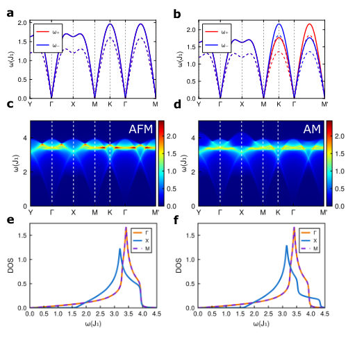
<figcaption class="paper-figure-caption"><b>Fig 5.</b> FIG. 6. 1/S-renormalized magnon band structure and two-magnon DOS. a and b Renormalized magnon dis- persions ω±(k) along high-symmetry paths for the conven- tional antiferromagnet (δJ2 = 0) and the altermagnet (δJ2 = 0.12J1), respectively. The red and blue solid lines denote the two magnon branches, which are degenerate in a, while the dashed lines show the corresponding LSW dispersions ω(0) ± (k) for comparison. c and d Two-magnon DOS D(q, ω) con- structed from the 1/S-renormalized magnon dispersions for the conventional antiferromagnet and the altermagnet. e and f Constant-q cuts of D(q, ω) at the Γ, M, and X points for the conventional antiferromagnet and the altermagnet; the Γ and M...</figcaption>
</figure>
</div>
<p><strong>Summary.</strong> This theoretical work investigates how two-magnon light scattering can serve as a fingerprint for altermagnetism in 2D magnets. By calculating the scattering intensity using spin-wave theory with quantum corrections, the authors show that the altermagnetic anisotropy ($\delta J_2$) causes a distinct, momentum-dependent shift in the two-magnon continuum edge. These findings strongly motivate using momentum-resolved inelastic X-ray scattering to probe this novel magnetic order.</p>
<p><strong>Why it may be interesting.</strong> The work provides a concrete, measurable spectroscopic signature (momentum-dependent two-magnon splitting) that can be used to experimentally distinguish altermagnets from conventional antiferromagnets, which is highly relevant for condensed matter spectroscopy.</p>
<details>
<summary>Detailed structure</summary>
<p><strong>Main problem.</strong> The primary challenge is identifying the unique spectroscopic fingerprints of altermagnetism, particularly through the two-magnon light scattering response.</p>
<p><strong>Main result.</strong> The altermagnetic exchange anisotropy ($\delta J_2$) causes a measurable shift in the upper edge of the two-magnon continuum at finite momentum ($\mathbf{X}$), and it lifts the degeneracy of the two-magnon resonance at $\mathbf{K}=(\pi/2, \pi/2)$ by an amount linear in $|\delta J_2|$.</p>
<p><strong>Method.</strong> The study employs linear spin-wave theory supplemented by leading $1/S$ quantum corrections to calculate the two-magnon light scattering intensity.</p>
<p><strong>Model / system.</strong> The system modeled is a two-dimensional $d$-wave altermagnet, described by an effective Heisenberg model on a Lieb lattice, characterized by nearest-neighbor ($J_1$) and next-nearest-neighbor interactions ($J_{2a}, J_{2b}$).</p>
<p><strong>Key observables.</strong> Two-magnon light scattering intensity $I(q, \omega)$, the upper edge of the two-magnon continuum, and the energy splitting of the two-magnon resonance.</p>
<p><strong>Important parameters / regimes.</strong> The key parameter is the altermagnetic exchange anisotropy, $\delta J_2 = J_{2a} - J_{2b}$.</p>
<p><strong>Assumptions / limitations.</strong> The analysis relies on linear spin-wave theory supplemented by leading $1/S$ quantum corrections, and approximations are made regarding higher-order terms in the magnon Hamiltonian.</p>
<p><strong>Figures summary.</strong> Figures illustrate the Lieb lattice structure and the magnon dispersion/two-magnon DOS for both conventional antiferromagnets ($\delta J_2 = 0$) and altermagnets ($\delta J_2 
eq 0$), showing the momentum-dependent reconstruction.</p>
<p><strong>Paper structure.</strong> The paper systematically analyzes the two-magnon response, first establishing the theoretical framework using LSWT and quantum corrections, then quantifying the momentum-dependent splitting at $\mathbf{X}$, and finally confirming the splitting via the lifting of degeneracy at $\mathbf{K}$ by comparing resonance positions derived from the interacting kernel with those from the full scattering intensity.</p>
</details>
<details>
<summary>Abstract</summary>
<p>Altermagnetism is a recently established class of magnetic order that combines fully compensated moments with momentum-dependent spin splitting, yet identifying its spectroscopic fingerprints remains an open challenge. In this work, we investigate finite-momentum two-magnon excitations in a two-dimensional $d$-wave altermagnet by calculating the two-magnon light scattering intensity in different polarization channels. Using linear spin-wave theory and further incorporating the leading $1/S$ quantum corrections, we demonstrate that the characteristic magnon splitting of altermagnets shifts the upper edge of the two-magnon continuum and the corresponding spectral features to higher energy at $\boldsymbol{X}=(π,0)$ relative to the conventional antiferromagnet, by an amount linear in the exchange anisotropy $|δJ_2|$, while leaving the response at the Brillouin-zone center unchanged. Although magnon-magnon interactions strongly redistribute spectral weight toward lower energies, the energy scale associated with the high-energy momentum-selective reconstruction remains robust. The interactions additionally generate a pronounced low-energy two-peak structure that has no counterpart within linear spin-wave theory. At $\boldsymbol{K}=(π/2,π/2)$, we show that the interacting two-magnon resonance is twofold degenerate in the conventional antiferromagnetic phase, while a finite altermagnetic exchange anisotropy lifts this degeneracy, producing two peaks whose separation is linear in $|δJ_2|$. The characteristic energy scales underlying both features are intrinsic to the two-magnon sector rather than to a specific scattering operator. These findings highlight the potential of finite-momentum two-magnon spectroscopy for identifying altermagnetic order in insulating magnets and motivate momentum-resolved resonant inelastic x-ray scattering studies of candidate altermagnetic materials.</p>
</details>
<p><sub><a href="#top">↑ back to top</a></sub></p>

<p><a id="paper-2609.09276"></a></p>
<h3 id="universal-entanglement-dynamics-of-unitary-operators"><a href="http://arxiv.org/abs/2609.09276v1">Universal Entanglement Dynamics of Unitary Operators</a></h3>
<p><strong>Authors:</strong> Ian Low, Navin McGinnis<br>
<strong>Type:</strong> theory · <strong>Category:</strong> quantum information and computing · <strong>PDF:</strong> <a href="https://arxiv.org/pdf/2609.09276v1">https://arxiv.org/pdf/2609.09276v1</a><br>
<strong>Analysis basis:</strong> full PDF text, analyzed in chunks</p>
<div class="figure-strip-hint">↔ Scroll figures horizontally</div>
<div class="paper-figures-scroll">
<figure class="paper-figure-card">
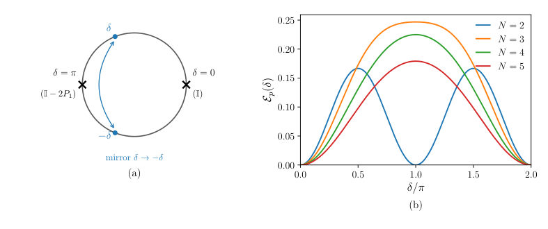
<figcaption class="paper-figure-caption"><b>Fig 1.</b> FIG. 1. (a) The two-projector unitary circle, corresponding to the boundary of Fig. 1 in Ref. [18] and parametrized by the relative phase δ. The fixed points δ = 0, π under δ →−δ are stationary by Theorem 1. (b) Entangling power of the singlet–adjoint family for N = 2, 3, 4, 5. The reflection at δ = π is a minimum for N = 2 and a maximum for N ≥3.</figcaption>
</figure>
<figure class="paper-figure-card">
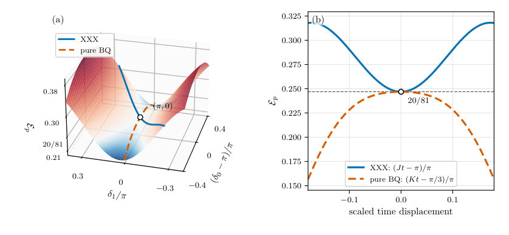
<figcaption class="paper-figure-caption"><b>Fig 2.</b> FIG. 2. Entangling power near the stationary corner (δ0, δ1) = (π, 0) of the two-site spin-1 BLBQ family. (a) Entangling power in relative-phase coordinates, with the XXX (solid blue) and pure-biquadratic (dashed orange) trajectories. (b) Corresponding one-dimensional trajectories of the time-evolution: the corner is a local minimum along the XXX trajectory but a local maximum along the pure-biquadratic trajectory.</figcaption>
</figure>
</div>
<p><strong>Summary.</strong> This paper mathematically characterizes the points where the entangling power of a unitary gate is extremal. It proves that these stationary points, called 'corners,' correspond to generalized reflection gates ($U^2 \propto \mathbb{I}$). This result provides a powerful tool for understanding the entanglement properties of fundamental quantum gates in both abstract and physical models like spin chains.</p>
<p><strong>Why it may be interesting.</strong> It provides a rigorous mathematical characterization of highly entangled, symmetry-constrained quantum gates ($U^2 \propto \mathbb{I}$), which are crucial building blocks for quantum computation and understanding gate universality.</p>
<details>
<summary>Detailed structure</summary>
<p><strong>Main problem.</strong> To find a general statement about where the entangling power of a unitary operator is extremized.</p>
<p><strong>Main result.</strong> The entangling power is stationary at specific points called 'corners,' which correspond to unitary gates that are generalized reflections ($U^2 \propto \mathbb{I}$).</p>
<p><strong>Method.</strong> The analysis uses the spectral decomposition of the unitary operator and calculates the entangling power as a function of relative eigenphases, finding stationary points by setting the gradient to zero.</p>
<p><strong>Model / system.</strong> The system involves unitary operators $U$ acting on a bipartite Hilbert space, analyzed via their spectral decomposition in terms of eigenvalues and eigen-projectors.</p>
<p><strong>Key observables.</strong> Entangling power ($E_p$), which is the average linear entropy generated from product states.</p>
<p><strong>Important parameters / regimes.</strong> The number of distinct eigenvalues ($n$), and the relative eigenphases ($\delta_a$).</p>
<p><strong>Assumptions / limitations.</strong> The analysis focuses on the stationary points (corners) of the entangling power function, though other extrema may exist in the interior.</p>
<p><strong>Figures summary.</strong> Figure 2 illustrates the entangling power near a stationary corner for a two-site spin-1 system, showing how trajectories (e.g., XXX vs. pure BQ limits) pass through these points.</p>
<p><strong>Paper structure.</strong> The paper establishes the mathematical framework by defining $E_p$ and its dependence on relative phases. It then proves the existence of stationary points (corners) at specific phase configurations, characterizes the resulting unitary gates ($R = I - 2Q$), and illustrates the findings with examples from two-qubit gates and spin chains.</p>
</details>
<details>
<summary>Abstract</summary>
<p>The entangling power of a unitary operator acting on a bipartite Hilbert space measures the entanglement it generates from product states, averaged over the inputs. A finite-dimensional unitary has a spectral decomposition $U=\sum_{a=1}^{n}e^{iθ_a}P_a$, where $e^{iθ_a}$ are the eigenvalues, $P_a$ the corresponding eigen-projectors, and $n$ is the number of distinct eigenvalues. After removing an overall phase, the entangling power is a function on the $(n-1)$-torus of relative eigenphases at fixed spectral projectors. We prove that this function is stationary at all $2^{n-1}$ points on the torus where every relative phase is $0$ or $π$, which we define as \textit{corners}. Up to an overall phase, $U$ at each corner is a generalized reflection $R=\mathbb{I}-2Q$ satisfying $R^2=\mathbb{I}$, where $Q$ is the sum of spectral projectors whose relative phase is $π$. At the corner the entangling power is expressed in terms of seven local-unitary invariants of $Q$. A unitary gate $U$ can be realized as a corner of some projector family if and only if $U^2\propto\mathbb{I}$, a condition satisfied by many Clifford and non-Clifford gates. We illustrate the theorem with two-qubit gates, $SU(N)$ channel decompositions, and two-site spin chains, obtaining examples of minima, maxima, and saddle points. In addition, a corner that is a saddle point on the full phase torus can appear as a local maximum or minimum along different time-evolution trajectories.</p>
</details>
<p><sub><a href="#top">↑ back to top</a></sub></p>

<p><a id="paper-2609.09680"></a></p>
<h3 id="wasserstein-stability-couplings-across-volumes-and-the-math1189math-moment-thresholds-in-the-edwards-anderson-model"><a href="http://arxiv.org/abs/2609.09680v1">Wasserstein Stability, Couplings Across Volumes, and the $1+1/d$ Moment Thresholds in the Edwards--Anderson Model</a></h3>
<p><strong>Authors:</strong> Mauris Chueng, Hexiang Wang, Keheng Zhu<br>
<strong>Type:</strong> theory · <strong>Category:</strong> disordered systems and neural networks · <strong>PDF:</strong> <a href="https://arxiv.org/pdf/2609.09680v1">https://arxiv.org/pdf/2609.09680v1</a><br>
<strong>Analysis basis:</strong> full PDF text, analyzed in chunks</p>
<div class="figure-strip-hint">↔ Scroll figures horizontally</div>
<div class="paper-figures-scroll">
<figure class="paper-figure-card">

<figcaption class="paper-figure-caption"><b>Fig 1.</b> Low-resolution page preview, page 2</figcaption>
</figure>
<figure class="paper-figure-card">
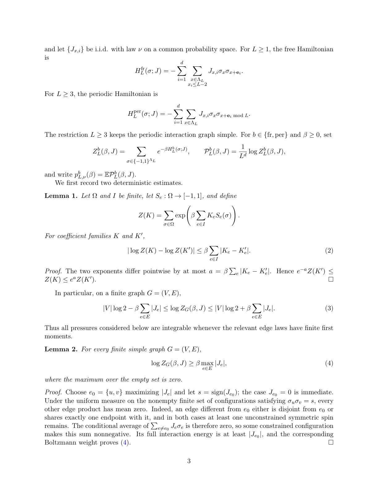
<figcaption class="paper-figure-caption"><b>Fig 2.</b> Low-resolution page preview, page 3</figcaption>
</figure>
<figure class="paper-figure-card">

<figcaption class="paper-figure-caption"><b>Fig 3.</b> Low-resolution page preview, page 4</figcaption>
</figure>
<figure class="paper-figure-card">
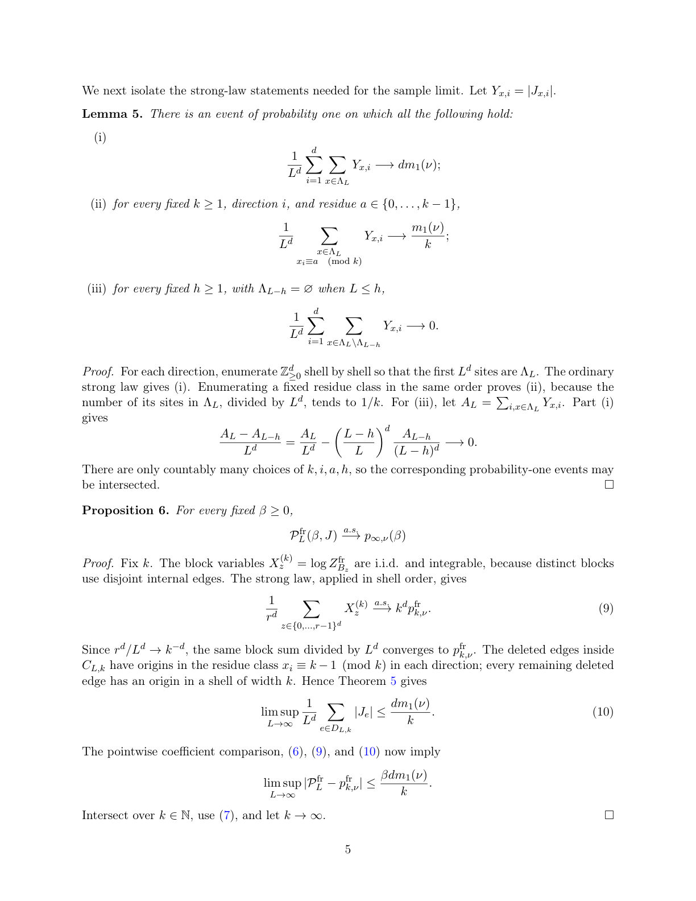
<figcaption class="paper-figure-caption"><b>Fig 4.</b> Low-resolution page preview, page 5</figcaption>
</figure>
<figure class="paper-figure-card">

<figcaption class="paper-figure-caption"><b>Fig 5.</b> Low-resolution page preview, page 6</figcaption>
</figure>
</div>
<p><strong>Summary.</strong> This work provides a deep mathematical analysis of the Edwards-Anderson Ising model under random disorder, focusing on the convergence of its thermodynamic pressure. The authors prove that the stability of this limit depends critically on the disorder couplings having a finite moment of order $1+1/d$. This establishes a sharp, universal criterion for the existence of the thermodynamic limit across different coupling constructions.</p>
<p><strong>Why it may be interesting.</strong> The rigorous mathematical framework developed for determining the precise moment conditions required for thermodynamic limits in disordered systems is highly relevant to understanding phase transitions and critical behavior in complex quantum materials.</p>
<details>
<summary>Detailed structure</summary>
<p><strong>Main problem.</strong> The paper investigates the stability and convergence properties of the quenched pressure in the Edwards-Anderson Ising model under random disorder.</p>
<p><strong>Main result.</strong> It establishes that the infinite-volume pressure exhibits Wasserstein stability and that almost-sure convergence requires the disorder couplings to satisfy the moment condition $\mathbb{E}|J|^{1+1/d} < \infty$.</p>
<p><strong>Method.</strong> The analysis employs tools from probability theory, including Wasserstein distance, strong laws, and Borel-Cantelli lemmas, to compare thermodynamic limits under different coupling assumptions.</p>
<p><strong>Model / system.</strong> The system is the nearest-neighbor Edwards-Anderson Ising model, analyzed using both free and periodic boundary conditions. The disorder couplings $\{J_{x,i}\}$ are random variables drawn from a law $
u$.</p>
<p><strong>Key observables.</strong> The primary observable is the quenched pressure, $p_b^L(eta, J) = rac{1}{L^d} \log Z_b^L(eta, J)$, and its limit $p_{\infty, 
u}(eta)$.</p>
<p><strong>Important parameters / regimes.</strong> The critical exponent is $1+1/d$, where $d$ is the spatial dimension. The coupling constant $eta$ and the disorder law $
u$ are key parameters.</p>
<p><strong>Assumptions / limitations.</strong> The analysis relies on comparing the behavior under joint coupling versus independent resampling of disorder volumes, and the sharpness proof requires constructing specific counterexamples for sub-critical moments.</p>
<p><strong>Figures summary.</strong> Not specified.</p>
<p><strong>Paper structure.</strong> The paper proceeds by first establishing quantitative stability bounds using the 1-Wasserstein distance. It then proves the equivalence between almost-sure convergence under all joint couplings and the convergence of one-volume laws. Finally, it rigorously determines the optimal moment threshold, $1+1/d$, for this universal convergence.</p>
</details>
<details>
<summary>Abstract</summary>
<p>We study the quenched pressure of the nearest-neighbor Edwards--Anderson Ising model with free and periodic boundary conditions. First, we prove that the infinite-volume pressure is $βd$-Lipschitz in the coupling law for the $1$-Wasserstein distance, yielding quantitative thermodynamic limits for spatially inhomogeneous disorder. Second, for periodic volumes, we prove that almost-sure convergence under every joint coupling of the finite-volume disorder arrays is equivalent to complete convergence of the one-volume pressure laws. Third, we prove that $\mathbb{E}\vert{}J\vert{}^{1+1/d}<\infty$ guarantees this universal-coupling conclusion. We further show that this exponent is optimal among uniform power-moment assumptions: for every $1\leq q<1+1/d$, there is a centered symmetric law with finite $q$-th moment for which canonical nested volumes converge almost surely, whereas independently resampled volumes with the same fixed-volume marginals converge in probability but not almost surely. Finally, in dimension one, we prove that the first-moment condition is also necessary for a finite limiting pressure.</p>
</details>
<p><sub><a href="#top">↑ back to top</a></sub></p>
</details>
<h2 id="secondary-cond-mat-archives">Secondary cond-mat archives</h2>
<p><em>Papers from cond-mat.mtrl-sci, mes-hall, other, soft, supr-con. These archives are de-prioritized — they appear at the end regardless of relevance score.</em></p>
<h3 id="relevant-in-secondary-archives-18">Relevant in secondary archives (18)</h3>

<p><a id="paper-2609.10389"></a></p>
<h3 id="fast-synergetic-simulation-to-study-slow-evolution-of-soliton-patterns-in-optical-resonators"><a href="http://arxiv.org/abs/2609.10389v1">Fast Synergetic Simulation to Study Slow Evolution of Soliton Patterns in Optical Resonators</a></h3>
<p><strong>Authors:</strong> Sanzida Akter, Pradyoth Shandilya, Logan Courtright, Amir Leshem, Giuseppe D'Aguanno, Omri Gat, Curtis R. Menyuk<br>
<strong>Type:</strong> theory · <strong>Category:</strong> numerical methods · <strong>PDF:</strong> <a href="https://arxiv.org/pdf/2609.10389v1">https://arxiv.org/pdf/2609.10389v1</a><br>
<strong>Analysis basis:</strong> full PDF text, analyzed in chunks
<strong>Topic relevance:</strong> 🔥 <code>methods for driven-dissipative</code> <strong>4/5</strong> · <code>Keldysh / 2PI / non-Gaussian methods</code> <strong>1/5</strong> · <code>correlated / nonlocal dissipation</code> <strong>1/5</strong> · <code>driven-dissipative phase transition</code> <strong>1/5</strong> · <code>non-equilibrium universality</code> <strong>1/5</strong> · <code>scars &amp; prethermalization</code> <strong>1/5</strong></p>
<div class="figure-strip-hint">↔ Scroll figures horizontally</div>
<div class="paper-figures-scroll">
<figure class="paper-figure-card">
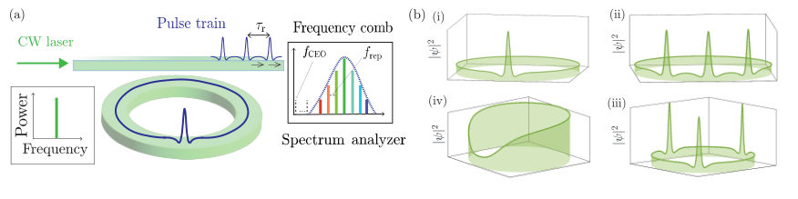
<figcaption class="paper-figure-caption"><b>Fig 1.</b> Figure 1: (a) Schematic of a microresonator system for frequency comb generation. A microring resonator is driven by an external CW laser source to generate a train of soliton pulses or more complex patterns that form a frequency comb, as analyzed using an optical spectrum analyzer. (b) Intracavity intensity profile illustration of commonly observed optical patterns. Anomalous dispersion regime: (i) a single dissipative Kerr soliton, (ii) a soliton molecule, (iii) a perfect soliton crystal. Normal dispersion regime: (iv) a dark soliton.</figcaption>
</figure>
<figure class="paper-figure-card">
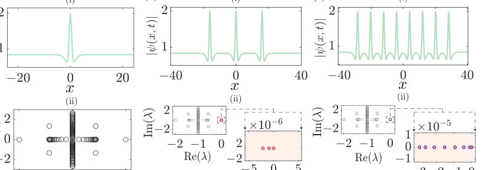
<figcaption class="paper-figure-caption"><b>Fig 2.</b> Figure 2: (a) (i) Profile of a single soliton stationary solution. (ii) The corresponding eigenvalue spectrum derived from the linearized operator. The spectrum reveals a fourfold symmetry and a single eigenvalue near zero, corresponding to translational invariance of the soliton. (b) (i) A three- soliton molecule solution and (ii) its eigenvalue profile. Here, there are three eigenvalues near zero: one represents translational invariance (similar to the single soliton), while the other two represent the slowly varying DOFs associated with the relative motion between solitons. (c) (i) An eight- soliton molecule and (ii) its eigenvalue spectrum. In this system, there are eight eigenvalues...</figcaption>
</figure>
<figure class="paper-figure-card">
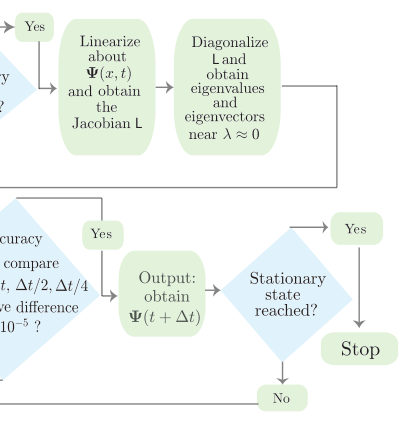
<figcaption class="paper-figure-caption"><b>Fig 3.</b> Figure 3: Synergetic method algorithm flowchart</figcaption>
</figure>
<figure class="paper-figure-card">

<figcaption class="paper-figure-caption"><b>Fig 4.</b> Figure 4: (a) Two-soliton molecule system where xph is half the separation distance. (b) Dynam- ical spectrum of the two-soliton molecule showing the presence of two eigenvalues near zero: λ0 corresponds to translational invariance of the soliton pair and λM is responsible for relative motion between solitons. (c) Shape of the two eigenvectors of the near-zero eigenvalues. (d) Two-soliton potential function U(xph) as a function of half the separation distance xph showing the consecutive stable and unstable equilibria. Inset-2 shows U(xph) near the potential maximum at xph = 6.7. The potential beyond this point appears nearly flat on a linear scale due to the exponential falloff of the...</figcaption>
</figure>
<figure class="paper-figure-card">
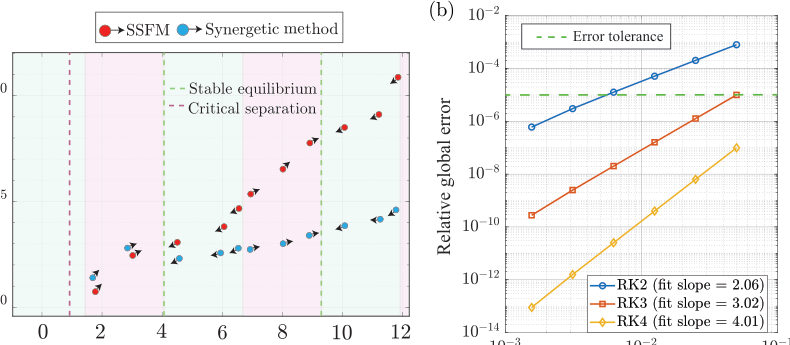
<figcaption class="paper-figure-caption"><b>Fig 5.</b> Figure 5: (a) CPU time comparison between the synergetic method and the SSFM for the two- soliton system as a function of xph(t = 0) as the solitons approach equilibrium starting at different separations. (b) Time comparison and error analysis for the synergetic method using different order explicit Runge-Kutta integrators; RK2 = second-order, RK3 = third-order, RK4 = fourth-order.</figcaption>
</figure>
</div>

<p><strong>Summary.</strong> This paper introduces the synergetic method, a novel numerical technique designed to overcome the stiffness limitations encountered when simulating systems with widely separated timescales. It applies this method to model the slow, long-term evolution of complex soliton patterns in optical microresonators. The success demonstrates the method's power for studying pattern formation in nonlinear systems on realistic, long timescales.</p>
<p><strong>Why it may be interesting.</strong> The technique itself is a powerful, general numerical tool for analyzing complex, multi-scale physical systems, making it highly relevant for theoretical work in open quantum systems or nonlinear optics where timescale separation is common.</p>
<details>
<summary>Detailed structure</summary>
<p><strong>Main problem.</strong> The primary challenge is simulating the slow, long-term evolution of complex soliton patterns in optical resonators, where the interaction timescales are vastly separated from the fast dissipative/loss timescales.</p>
<p><strong>Main result.</strong> The authors successfully applied the synergetic method to model the full interaction dynamics of multi-soliton molecules (up to eight solitons) over extended laboratory timescales, achieving massive computational speedups.</p>
<p><strong>Method.</strong> They developed and applied the 'synergetic method,' which is inspired by Haken's principle to eliminate rapidly damped degrees-of-freedom, allowing for time steps orders of magnitude larger than conventional methods.</p>
<p><strong>Model / system.</strong> The system is based on dissipative Kerr solitons in a driven nonlinear Kerr cavity, modeled by the Lugiato-Lefever equation (a driven-damped nonlinear Schrödinger equation).</p>
<p><strong>Key observables.</strong> Soliton patterns (single, molecule, crystal), the potential function governing relative motion, and the dynamical spectrum eigenvalues.</p>
<p><strong>Important parameters / regimes.</strong> The separation of timescales between fast damping/dispersion and slow soliton interaction dynamics; laboratory timescales (seconds).</p>
<p><strong>Assumptions / limitations.</strong> The method assumes a clear and large separation between the fast, damped dynamics and the slow, pattern-governing dynamics, allowing for projection onto the slow subspace.</p>
<p><strong>Figures summary.</strong> Figures illustrate the schematic of the resonator, the resulting soliton patterns, the dynamical spectrum showing eigenvalues near zero for slow modes, and trajectory evolution converging onto potential energy minima.</p>
<p><strong>Paper structure.</strong> The paper progresses by establishing the physical context (soliton pattern formation in Kerr cavities), identifying the computational bottleneck (stiffness due to timescale separation), proposing the synergetic method, and validating it by simulating increasing complexity (two-soliton, three-soliton, eight-soliton molecules).</p>
</details>
<details>
<summary>Abstract</summary>
<p>Complex patterns in physical and biological systems often emerge through slow collective dynamics governed by a small number of key variables. In nonlinear optical resonators, dissipative Kerr solitons provide an important example, where interactions between well-separated solitons can evolve over timescales far longer than the characteristic loss and gain timescales. Direct numerical simulation of these dynamics is challenging because stiffness forces conventional methods to resolve many rapidly damped degrees-of-freedom with very small time steps. We present a numerical scheme, the synergetic method, that eliminates these rapidly damped degrees-of-freedom and retains the slowly evolving modes, enabling time steps many orders of magnitude larger than those used in conventional approaches. Applied to soliton molecules in driven Kerr cavities, the method achieves speedups of $10^3$ to $10^5$ while capturing dynamics on laboratory timescales. We use it to model the full interaction dynamics of a three-soliton molecule and the evolution of an eight-soliton molecule. The approach provides an efficient framework for studying slow pattern formation in nonlinear systems with widely separated timescales.</p>
</details>
<p><sub><a href="#top">↑ back to top</a></sub></p>

<p><a id="paper-2609.09922"></a></p>
<h3 id="apparent-zero-momentum-signals-from-magnon-magnon-interference-in-near-field-spin-wave-imaging"><a href="http://arxiv.org/abs/2609.09922v1">Apparent Zero-Momentum Signals from Magnon--Magnon Interference in Near-Field Spin-Wave Imaging</a></h3>
<p><strong>Authors:</strong> Julien Berthomier, Romain Lebrun, Vincent Cros, Jamal Ben Youssef, Karim Bouzehouane, Abdelmadjid Anane<br>
<strong>Type:</strong> both · <strong>Category:</strong> other · <strong>PDF:</strong> <a href="https://arxiv.org/pdf/2609.09922v1">https://arxiv.org/pdf/2609.09922v1</a><br>
<strong>Analysis basis:</strong> full PDF text, analyzed in chunks
<strong>Topic relevance:</strong> 🔥 <code>interference shaping light</code> <strong>4/5</strong> · <code>quantum measurements</code> <strong>2/5</strong></p>
<div class="figure-strip-hint">↔ Scroll figures horizontally</div>
<div class="paper-figures-scroll">
<figure class="paper-figure-card">
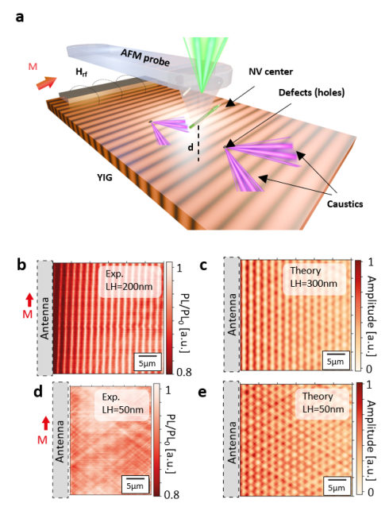
<figcaption class="paper-figure-caption"><b>Fig 1.</b> FIG. 1. Effect of NV-sample distance on phase- coherent spin-wave imaging. (a) Schematic of the experi- mental setup: a single NV center at the end of an AFM probe (QZabre) scans above a 140-nm-thick YIG film. A stripline antenna excites primarily Damon–Eshbach (DE) modes with the bias field µ0Hext = 15.9 mT applied parallel to the trans- ducer. Propagating spin waves scatter off defects, generating characteristic caustic beams. (b) Experimental NV contrast at an NV–sample distance d = 200 nm, revealing the wave- fronts of the coherently excited DE modes. (c) Corresponding near-field diffraction simulation accounting for the interfer- ence between the antenna field and the spin-wave stray...</figcaption>
</figure>
<figure class="paper-figure-card">

<figcaption class="paper-figure-caption"><b>Fig 2.</b> FIG. 2. Probing the reciprocal space of spin-wave interference at varying lift heights. (a) Fast Fourier Transform (FFT) of the experimental image at d = 200 nm [Fig. 1(b)]. The primary DE modes manifest as distinct reciprocal-space peaks; additional harmonics arise from the nonlinearity of the contrast with respect to microwave power and the spatial anharmonicity of the non-propagating microwave excitation field at the NV position. (b) FFT of the experimental image at d = 50 nm [Fig. 1(d)], where a butterfly-shaped spectral distribution emerges with prominent components near k ≈0. The expected analytical isofrequency contour is overlaid as a solid black line. The dashed curve corresponds...</figcaption>
</figure>
<figure class="paper-figure-card">
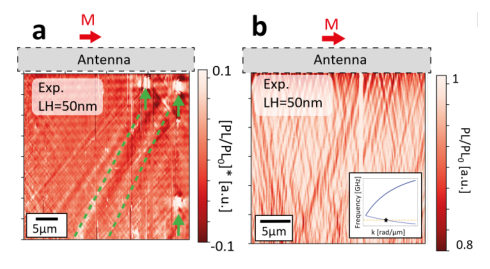
<figcaption class="paper-figure-caption"><b>Fig 3.</b> FIG. 3. Spin-wave scattering from intrinsic defects and transducer corrugations. (a) Experimental mag- netic image revealing caustic beams (dashed lines) originat- ing from scattering centers at the YIG surface (arrows). At µ0H = 17.1 mT and fNV = 2390 MHz, the excitation fre- quency intersects the DE branch, leading to high-efficiency propagation. The contrast [PL/PL0]∗denotes the signal after median-column subtraction to enhance wavefront visibility. (b-inset) Calculated dispersion relation at µ0H = 33.3 mT; at fNV = 1937 MHz, the frequency lies below the DE mani- fold but remains resonant with the backward-volume branch. (b) Experimental NV images at fNV = 1937 MHz. While primary DE...</figcaption>
</figure>
<figure class="paper-figure-card">

<figcaption class="paper-figure-caption"><b>Fig 4.</b> FIG. 4. Impact of transducer geometry on spin-wave scattering efficiency. (a)–(c) Real-space NFD simulations of spin-wave propagation excited by antennas with varying edge profiles at a fixed lift height: (a) ideal (rectilinear) edge, where only the primary DE mode is excited, (b) 1% corruga- tion width (100 nm), and (c) 4% corrugations. Insets provide a magnified view of the lithographic transducer definition. (d)–(f) Corresponding spectral distributions in k-space ob- tained via FFT of the real-space profiles. The emergence of high-momentum spectral weight correlates with the presence of edge roughness. (g) Relative amplitude ratio of a represen- tative scattered mode [kscat = (1, 2)...</figcaption>
</figure>
</div>

<p><strong>Summary.</strong> This research demonstrates that near-field imaging of spin waves does not directly map the material's eigenmode spectrum. By analyzing signals from YIG films, the authors show that apparent low-momentum signals are actually due to coherent interference between different spin-wave components. This establishes that such measurements yield an interferometric field spectrum rather than a simple eigenmode map.</p>
<p><strong>Why it may be interesting.</strong> This work provides a crucial methodological caution for experimental condensed matter physicists studying wave phenomena, showing that advanced near-field techniques require careful deconvolution of interference effects from true material properties.</p>
<details>
<summary>Detailed structure</summary>
<p><strong>Main problem.</strong> The standard interpretation that spatially resolved measurements of coherent waves directly map the underlying eigenmode spectrum fails when imaging multimode spin-wave transport in the near-field.</p>
<p><strong>Main result.</strong> The observed low-momentum signals are not true eigenmodes but are instead artifacts arising from the coherent interference (beating) between directly excited spin waves and those scattered by defects or sample imperfections.</p>
<p><strong>Method.</strong> The study combines experimental measurements using scanning nitrogen-vacancy magnetometry with theoretical modeling based on the Near-Field Diffraction (NFD) framework to decompose the total measured field.</p>
<p><strong>Model / system.</strong> The physical system is spin-wave propagation in a yttrium iron garnet (YIG) film. The analysis models the total local microwave field as a superposition of contributions from the antenna, the primary excited spin waves, and scattered spin waves.</p>
<p><strong>Key observables.</strong> The total local microwave field $B_{tot}(\mathbf{r})$ and its spatial Fourier components, particularly the anomalous components appearing at the difference wave vector $\Delta \mathbf{k} = \mathbf{k}_{exc} - \mathbf{k}_{scat}$.</p>
<p><strong>Important parameters / regimes.</strong> Probe-sample distance ($d$), wave vectors ($\mathbf{k}_{exc}, \mathbf{k}_{scat}$), and the relative strength of the interference term compared to the primary excitation fields.</p>
<p><strong>Assumptions / limitations.</strong> The analysis relies on the NFD model and assumes that the measured signal is dominated by the coherent interference cross-term when analyzing the anomalous signals.</p>
<p><strong>Figures summary.</strong> Figures compare experimental contrast maps at different distances ($d=200$ nm vs $d=50$ nm) and show that the anomalous low-$k$ signal is reproduced by the theoretical cross-term ($\mathbf{B}_{SW,exc}\mathbf{B}_{SW,scat}$) in the NFD simulations.</p>
<p><strong>Paper structure.</strong> The paper establishes the failure of the direct eigenmode mapping assumption, presents experimental evidence of anomalous low-$k$ signals, and then uses the NFD model to theoretically identify the origin of these signals as magnon-magnon interference terms.</p>
</details>
<details>
<summary>Abstract</summary>
<p>Spatially resolved measurements of coherent waves are commonly read as direct maps of the underlying eigenmode spectrum. We show that this interpretation fails in near-field imaging of multimode spin-wave transport. Scanning nitrogen-vacancy magnetometry of yttrium iron garnet reveals pronounced apparent low-wave-vector signals at frequencies for which no propagating spin-wave mode exists. By tuning the probe-sample distance and modeling the anisotropic near-field response, we identify their origin as coherent mixing between directly excited Damon-Eshbach waves and defect- or transducer-scattered spin waves: the measured signal acquires spatial Fourier components at the difference wave vector $\mathbf{k}_{\mathrm{exc}}-\mathbf{k}_{\mathrm{scat}}$, which can vanish even though both constituent waves carry finite momentum. These results establish that near-field spectra of coherent excitations are interferometric field spectra rather than eigenmode maps, providing both a caution and a framework for identifying scattering processes in nanoscale magnonic devices.</p>
</details>
<p><sub><a href="#top">↑ back to top</a></sub></p>

<p><a id="paper-2609.10381"></a></p>
<h3 id="a-first-principles-multiscale-framework-for-topological-superconductivity"><a href="http://arxiv.org/abs/2609.10381v1">A First-Principles Multiscale Framework for Topological Superconductivity</a></h3>
<p><strong>Authors:</strong> Christopher L. Jacobs, Baishali Mandal, Taehwan Jung, Purna P. Paudel, Jason Kawasaki, Tudor D. Stanescu, Subhasish Mandal<br>
<strong>Type:</strong> theory · <strong>Category:</strong> other · <strong>PDF:</strong> <a href="https://arxiv.org/pdf/2609.10381v1">https://arxiv.org/pdf/2609.10381v1</a><br>
<strong>Analysis basis:</strong> full PDF text, analyzed in chunks
<strong>Topic relevance:</strong> <code>analog quantum simulation</code> <strong>3/5</strong> · <code>Keldysh / 2PI / non-Gaussian methods</code> <strong>2/5</strong> · <code>methods for driven-dissipative</code> <strong>2/5</strong></p>
<div class="figure-strip-hint">↔ Scroll figures horizontally</div>
<div class="paper-figures-scroll">
<figure class="paper-figure-card">

<figcaption class="paper-figure-caption"><b>Fig 1.</b> FIG. 1. Materials-design strategy and candi- date platforms. (a) Multiscale workflow connecting first- principles electronic-structure calculations, Wannier-derived low-energy Hamiltonians, Bogoliubov–de Gennes (BdG) the- ory, and topological invariant calculations. (b) Materi- als/heterostructure platforms under investigation, where Bext denotes an out-of-plane magnetic field. (i) (System I) bulk- like FeTe0.5Se0.5 (10-layer film) and (ii) (System II) monolayer FeTe0.5Se0.5. The dashed SrTiO3 substrate indicates that substrate is implicitly included by fixing the FeTe0.5Se0.5 in- plane lattice parameter to the value experimentally observed for 10 UC films on SrTiO3 [102]. Interfacial...</figcaption>
</figure>
<figure class="paper-figure-card">

<figcaption class="paper-figure-caption"><b>Fig 2.</b> FIG. 2. Crystal structure and low-energy band struc- ture for Bulk-like FeTe0.5Se0.5 (System I). (a) Crystal structure. (b) Orbital-resolved DFT band structure along Γ–Z. (c), (d) Orbital-resolved electronic structure along M– Γ–X–M for kz = 0 and kz = π (units of 1/c), respectively. The color bar indicates the relative Fe-d (red) and Te/Se-p (blue) character. The chalcogen-derived band shifts toward the Fermi level between kz = 0 and kz = π, while simulta- neously acquiring stronger Fe-d weight, resulting in enhanced spin–orbit-active and superconducting orbital hybridization. µ1a and µ1b denote the representative chemical potentials used for System I at kz = 0 and kz = π, respectively....</figcaption>
</figure>
<figure class="paper-figure-card">

<figcaption class="paper-figure-caption"><b>Fig 3.</b> FIG. 3. Wannier representation and superconducting BdG spectra of bulk-like FeTe0.5Se0.5 (System I). (a), (d) Comparison between DFT band structures (black solid lines) and Wannier-interpolated bands (red dashed lines) for kz = 0 and kz = π, respectively. (b), (c) BdG spectra at kz = 0 for s++ and s± pairing, evaluated near the isolated chalcogen-derived band (µ = 610 meV). (e), (f) Corresponding BdG spectra at kz = π (µ = 30 meV). The color denotes the sign of the superconducting pairing potential. Calculations were performed using ∆0 = 5 meV, with Rashba coupling strengths α = 250 meV (kz = 0) and α = 150 meV (kz = π).</figcaption>
</figure>
<figure class="paper-figure-card">
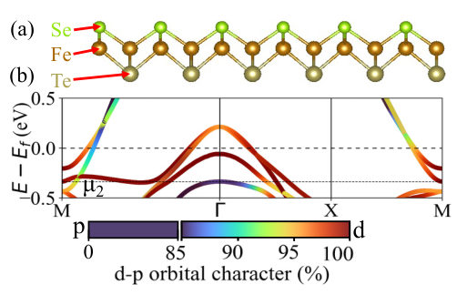
<figcaption class="paper-figure-caption"><b>Fig 4.</b> FIG. 4. Crystal structure and low-energy band structure for Monolayer FeTe0.5Se0.5 (System II). (a) Crystal structure of monolayer FeTe0.5Se0.5. (b) Orbital- resolved DFT band structure along M–Γ–X–M, with colors indicating the projected Fe-d (red) and Te/Se-p (blue) orbital weight, for fixed a = 3.88 ˚A. µ2 denotes the representative chemical potential.</figcaption>
</figure>
<figure class="paper-figure-card">

<figcaption class="paper-figure-caption"><b>Fig 5.</b> FIG. 5. Wannier representation and superconducting BdG spectra of monolayer FeTe0.5Se0.5 (System II). (a) Comparison between DFT band structures (black solid lines) and Wannier-interpolated bands (red dashed lines). (b), (c) BdG spectra for s++ and s± pairing symmetries, respec- tively. The color scale in (b-c) denotes the sign of the super- conducting pairing potential. Calculations were performed using ∆0 = 5 meV and α = 50 meV.</figcaption>
</figure>
</div>

<p><strong>Summary.</strong> This work introduces a comprehensive, multiscale computational framework to theoretically predict topological superconductivity in real materials. By combining DFT, Wannier models, and BdG theory, the authors successfully analyze Fe-based superconductors and heterostructures. The research provides a quantitative, materials-by-design route for engineering platforms capable of hosting Majorana zero modes.</p>
<p><strong>Why it may be interesting.</strong> While focused on condensed matter, the development of a rigorous, bottom-up computational pipeline linking electronic structure (DFT) to emergent topological quantum states (BdG/Chern number) is highly relevant for simulating complex quantum many-body systems in AMO physics.</p>
<details>
<summary>Detailed structure</summary>
<p><strong>Main problem.</strong> The primary goal is to develop a unified, materials-informed computational framework to predict and understand topological superconductivity (TSC) in real-world materials.</p>
<p><strong>Main result.</strong> The framework successfully predicts robust TSC in Fe-based materials, highlighting FeSe/GaAs heterostructures as particularly promising platforms for engineering Majorana materials.</p>
<p><strong>Method.</strong> The approach combines Density Functional Theory (DFT) for electronic structure, Wannier-based low-energy Hamiltonians, Bogoliubov-de Gennes (BdG) theory, and Matsubara Green's-function calculations.</p>
<p><strong>Model / system.</strong> The study focuses on Fe-based superconductors, investigating both intrinsic TSC (e.g., bulk FeTeSe) and proximity-induced TSC in heterostructures like FeSe/GaAs. The low-energy Hamiltonian incorporates Rashba spin-orbit coupling and superconducting pairing.</p>
<p><strong>Key observables.</strong> Topological gaps, topological invariants (Chern number), and the existence of zero-energy crossings signaling topological phase transitions.</p>
<p><strong>Important parameters / regimes.</strong> Chemical potential ($\mu$), Zeeman field ($V_z$), and the strength of superconducting pairing ($\Delta$).</p>
<p><strong>Assumptions / limitations.</strong> The framework assumes that key ingredients like Rashba-active states and strong orbital hybridization are necessary for robust TSC, and it builds upon established DFT/Wannier methodologies.</p>
<p><strong>Figures summary.</strong> Figure 1 illustrates the entire multiscale workflow, connecting first-principles calculations through Wannier models to the final BdG Hamiltonian and topological invariant evaluation.</p>
<p><strong>Paper structure.</strong> The paper follows a logical progression: defining the need for a unified framework, detailing the multiscale computational methodology (DFT $
ightarrow$ Wannier $
ightarrow$ BdG), applying this framework to specific material systems (FeTeSe, FeSe/GaAs), and finally deriving design principles for engineering Majorana materials.</p>
</details>
<details>
<summary>Abstract</summary>
<p>A microscopic understanding of topological superconductivity (TSC) in real materials requires a materials-informed approach that integrates first-principles electronic structure, superconductivity, and topology within a unified computational framework. Here, we develop such an approach by combining density functional theory, Wannier-based low-energy Hamiltonians, Bogoliubov-de Gennes theory, and Matsubara Green's-function-based Chern number calculations performed directly on realistic multiorbital superconducting Hamiltonians. We apply this framework to bulk-like and monolayer FeTeSe and to FeSe/GaAs heterostructures, enabling a unified investigation of both intrinsic and proximity-induced topological superconductivity. We identify key electronic-structure ingredients that promote robust TSC, including Rashba-active states near the Fermi level, strong induced superconducting pairing, and substantial orbital hybridization between spin-orbit-active and superconducting sectors. Guided by these design principles, we predict multiple topological superconducting phases in Fe-based materials and demonstrate that FeSe/GaAs heterostructures are particularly promising, exhibiting topological transitions at experimentally accessible chemical potentials and low Zeeman fields. Complementing the theoretical predictions, we demonstrate the growth and structural characterization of FeSe/GaAs heterostructures, establishing the experimental feasibility of the proposed materials platform. Our results provide a quantitative route for engineering and screening candidate Majorana materials and heterostructures directly from realistic electronic structures and establish a foundation for future materials-by-design approaches to topological superconductivity.</p>
</details>
<p><sub><a href="#top">↑ back to top</a></sub></p>

<p><a id="paper-2609.10212"></a></p>
<h3 id="nonlinear-edelstein-effect-in-rashba-superconductors"><a href="http://arxiv.org/abs/2609.10212v1">Nonlinear Edelstein effect in Rashba superconductors</a></h3>
<p><strong>Authors:</strong> Hikaru Ueki, Youichi Yanase<br>
<strong>Type:</strong> theory · <strong>Category:</strong> other · <strong>PDF:</strong> <a href="https://arxiv.org/pdf/2609.10212v1">https://arxiv.org/pdf/2609.10212v1</a><br>
<strong>Analysis basis:</strong> full PDF text, analyzed in chunks
<strong>Topic relevance:</strong> <code>Keldysh / 2PI / non-Gaussian methods</code> <strong>3/5</strong> · <code>methods for driven-dissipative</code> <strong>3/5</strong></p>
<div class="figure-strip-hint">↔ Scroll figures horizontally</div>
<div class="paper-figures-scroll">
<figure class="paper-figure-card">

<figcaption class="paper-figure-caption"><b>Fig 1.</b> FIG. 1. Schematic illustration of a semi-infinite Rashba su- perconductor subjected to a uniform magnetic field (orange arrow). Owing to the Rashba spin-orbit coupling, a spin mag- netization polarized along the x direction (red circles with ar- rows) is induced near the surface at x = 0, where the Meissner current flows (blue arrow).</figcaption>
</figure>
<figure class="paper-figure-card">

<figcaption class="paper-figure-caption"><b>Fig 2.</b> FIG. 2. Spatial dependence of the magnetic field (left), current density (center), and magnetization (right) near the surface at x = 0 in units of ℏ/2|e|ξ2 0, ℏ/2µ0|e|ξ3 0, and µBN(0)∆0, respectively, for α = 1.5∆0 at T = 0.2Tc, 0.4Tc, 0.6Tc, and 0.8Tc. The inset in the center panel shows the temperature dependence of the London penetration depth.</figcaption>
</figure>
<figure class="paper-figure-card">

<figcaption class="paper-figure-caption"><b>Fig 3.</b> FIG. 3. Intraband (red) and interband (blue) contributions to the normalized magnetic susceptibility ˜χxz, which originates from the Edelstein effect, together with their sum (black), as functions of α/∆0 at T = 0.2Tc (left) and 0.8Tc (right). The magnetic susceptibility is normalized by 2|e|ξ2 0µBN(0)∆0/ℏ.</figcaption>
</figure>
<figure class="paper-figure-card">
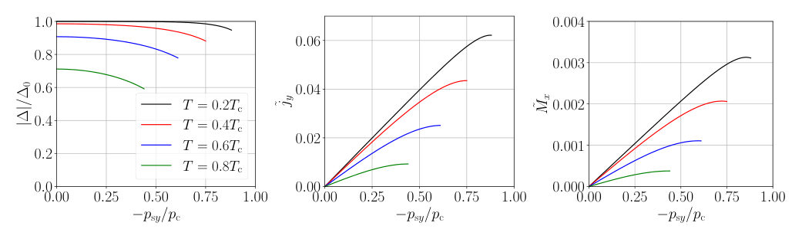
<figcaption class="paper-figure-caption"><b>Fig 4.</b> FIG. 4. Superfluid-momentum dependence of the superconducting gap (left), current density (center), and magnetization (right), in units of ∆0, ℏ/2µ0|e|ξ3 0, and µBN(0)∆0, respectively, for α = 1.5∆0 at T = 0.2Tc, 0.4Tc, 0.6Tc, and 0.8Tc. Here, the unit of superfluid momentum is pc ≡∆0/vF, and the superfluid momentum psy is treated as a local control parameter. In a semi-infinite geometry, however, it should be understood as psy = psy(x; B0), determined by the nonlinear Meissner screening profile, whose effective penetration depth depends on the surface magnetic field B0 [18, 19].</figcaption>
</figure>
<figure class="paper-figure-card">

<figcaption class="paper-figure-caption"><b>Fig 5.</b> FIG. 5. Current-density dependence of the magnetization normalized by µBN(0)∆0 (left) and its nonlinear part (right) for α = 1.5∆0 at T = 0.2Tc, 0.4Tc, 0.6Tc, and 0.8Tc. The nonlinear part is defined as ˜ M NL x ≡˜ Mx −˜ M L x , where ˜ M L x denotes the part of ˜ Mx linear in the current density jy. The unit of jy is the depairing current density jd.</figcaption>
</figure>
</div>

<p><strong>Summary.</strong> This work establishes a comprehensive quasiclassical theory for the Edelstein effect in Rashba superconductors by incorporating both intraband and interband contributions. The key finding is that the nonlinear dependence of the magnetization on the supercurrent is uniquely sourced by the interband term, which is mathematically related to the Berry connection arising from the spin-orbit coupling. This suggests that the nonlinear effect can serve as a sensitive probe of quantum geometric effects in superconducting materials.</p>
<p><strong>Why it may be interesting.</strong> The explicit separation and identification of the nonlinear response with a quantum geometric term (interband contribution) provides a novel diagnostic tool for probing the underlying band structure physics in superconductors.</p>
<details>
<summary>Detailed structure</summary>
<p><strong>Main problem.</strong> The paper develops a quasiclassical theory to describe the Edelstein effect in superconductors, specifically accounting for both intraband and interband contributions.</p>
<p><strong>Main result.</strong> The nonlinear dependence of the surface spin magnetization on the supercurrent arises solely from the interband contribution, which is linked to the quantum geometry (Berry connection) of the Rashba spin-orbit coupling.</p>
<p><strong>Method.</strong> The authors derive augmented Eilenberger equations in the presence of Rashba SOC and solve them using a quasiclassical expansion in the helicity basis.</p>
<p><strong>Model / system.</strong> The system is an s-wave Rashba superconductor, modeled using the Gor'kov equations transformed into the gauge-covariant Wigner representation.</p>
<p><strong>Key observables.</strong> Supercurrent-induced surface spin magnetization ($\mathbf{M}$), charge density ($
ho$), and current density ($\mathbf{j}$).</p>
<p><strong>Important parameters / regimes.</strong> Rashba SOC strength ($\alpha$), superconducting gap ($\Delta$), temperature ($T$), and supercurrent ($\mathbf{j}$).</p>
<p><strong>Assumptions / limitations.</strong> The analysis assumes a clean s-wave Rashba model and employs a quasiclassical expansion, retaining the anomalous-velocity term while neglecting others.</p>
<p><strong>Figures summary.</strong> Figures illustrate the dependence of magnetization and current density on the superfluid momentum ($\mathbf{p}_s$) at various temperatures, highlighting the nonlinear component.</p>
<p><strong>Paper structure.</strong> The paper progresses from formulating the problem using Gor'kov equations in the Wigner representation, deriving augmented Eilenberger equations, calculating the intraband and interband contributions separately, and finally analyzing the nonlinear response.</p>
</details>
<details>
<summary>Abstract</summary>
<p>We formulate a quasiclassical theory of the Edelstein effect in superconductors that incorporates both intraband and interband contributions. To describe the interband contribution, which is absent from the conventional leading-order quasiclassical formulation, we derive augmented Eilenberger equations in the presence of antisymmetric spin-orbit coupling. The intraband contribution is evaluated using multiband Eilenberger equations. We apply these formulations to supercurrent-induced surface spin magnetization in $s$-wave Rashba superconductors and investigate its dependence on temperature, distance from the surface, spin-orbit coupling strength, and supercurrent. The intraband contribution originates from a supercurrent-induced asymmetry of quasiparticles with opposite momenta and spin polarizations, whereas the interband contribution arises from the anomalous-velocity term generated by the momentum derivative of the Rashba spin-orbit potential. In the helicity basis, this anomalous-velocity term is expressed in terms of the Berry connection associated with the momentum dependence of the Rashba eigenstates. The intraband contribution increases linearly with the spin-orbit coupling strength, whereas the interband contribution exhibits a nonmonotonic dependence and is maximized when the Rashba spin splitting is comparable to the superconducting gap. Moreover, within the clean $s$-wave Rashba model considered here, we find that the nonlinear dependence of magnetization on the supercurrent arises solely from the interband contribution. Thus, although the intraband contribution dominates the linear Edelstein effect, the nonlinear Edelstein effect can serve as a useful probe of the interband contribution originating from quantum geometry.</p>
</details>
<p><sub><a href="#top">↑ back to top</a></sub></p>

<p><a id="paper-2609.09422"></a></p>
<h3 id="quantum-phase-transitions-and-fractional-quantized-anomalous-hall-insulators-in-rhombohedral-graphene"><a href="http://arxiv.org/abs/2609.09422v1">Quantum Phase Transitions and Fractional Quantized Anomalous Hall Insulators in Rhombohedral Graphene</a></h3>
<p><strong>Authors:</strong> Zach Hadjri, Xinlei Yue, Tonghang Han, Yuxuan Yao, Zhengguang Lu, Shenyong Ye, Junseok Seo, Jixiang Yang, Kenji Watanabe, Takashi Taniguchi, Liang Fu, Ady Stern, Long Ju<br>
<strong>Type:</strong> experiment · <strong>Category:</strong> strongly correlated electrons · <strong>PDF:</strong> <a href="https://arxiv.org/pdf/2609.09422v1">https://arxiv.org/pdf/2609.09422v1</a><br>
<strong>Analysis basis:</strong> full PDF text, analyzed in chunks
<strong>Topic relevance:</strong> <code>analog quantum simulation</code> <strong>3/5</strong></p>
<div class="figure-strip-hint">↔ Scroll figures horizontally</div>
<div class="paper-figures-scroll">
<figure class="paper-figure-card">
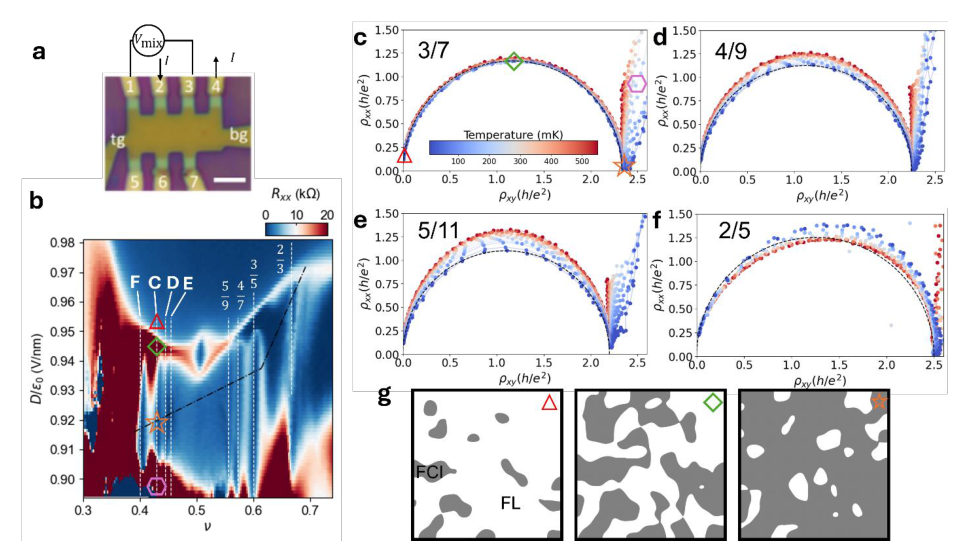
<figcaption class="paper-figure-caption"><b>Fig 1.</b> Fig. 1. Resistivity semi-circles of FL-FCI quantum phase transitions in a pentalayer rhombohedral graphene/hBN moiré superlattice. a, Optical micrograph of the device reported on in this paper. The probe configuration used to measure 𝑅𝑥𝑥 and 𝑅𝑥𝑦 is shown. b, Color map of longitudinal resistance 𝑅𝑥𝑥 as a function of moiré filling factor 𝜈 and D. Vertical stripes corresponding to FCIs can be seen in the intermediate range of D, above (below) which is the Fermi liquid state (the correlated insulating (CI) state). The thermal activation data in Fig. 4 were taken along the dotted-dashed line. c-f, Longitudinal resistivity 𝜌𝑥𝑥 versus Hall resistivity 𝜌𝑥𝑦 plots, corresponding to the dashed lines...</figcaption>
</figure>
<figure class="paper-figure-card">

<figcaption class="paper-figure-caption"><b>Fig 2.</b> Fig. 2. Resistivity semi-circles of the FL-EQAH-FCI/CFL phase transitions. a, 𝑅𝑥𝑥 colormap showing filling factors at and above 𝜈= 1/2, and dashed lines trace the D-field-driven quantum phase transitions at 𝜈= 1/2, 4/7, 3/5. The red triangle represents a Fermi liquid state, the black pentagon the EQAH state with Chern number C = 1, the orange star represents the CFL state with 𝜌𝑥𝑦≈2ℎ/𝑒2. The purple square represents the intermediate point between the FL and EQAH state, and the green diamond represents the intermediate point between EQAH and CFL. b-d, Resistivity plots for mixing chamber temperatures of 7 to 550 mK taken along the dashed lines in</figcaption>
</figure>
<figure class="paper-figure-card">

<figcaption class="paper-figure-caption"><b>Fig 3.</b> Fig. 3. Conductivity semi-circles and fractional quantized anomalous Hall insulators. a, 𝑅𝑥𝑥 color map, with black dashed lines tracing the D-field-driven quantum phase transitions at 𝜈 3/7 and 4/9. At 𝜈 4/9. The red triangle, orange star, pink hexagon, and green diamond represent a Fermi liquid, the FCI state, the insulating state, and the intermediate state, respectively. b,c, Plots of 𝜎𝑥𝑥 vs. 𝜎𝑥𝑦 at varying temperatures for 4/9 and 3/7 taken along dashed lines in a, respectively. The transitions from the FCI to the insulator agree well with the semi-circles, while the data corresponding to the FCI-FL transition develops into vertical lines with diverging conductivity. d, 𝜌𝑥𝑥 (solid...</figcaption>
</figure>
<figure class="paper-figure-card">

<figcaption class="paper-figure-caption"><b>Fig 4.</b> Fig. 4. Comparison with thermal activation model and transport gaps of FCI states. a,b, Temperature dependence of 𝑅𝑥𝑥 vs electron density along the dashed-dotted line in Fig. 1a, taken at 0 T and 2 T out-of-plane magnetic fields. The upper x-axis is the moiré filling factor. b, Similar to a, but at 2 T, and along a different trajectory in (𝑛, 𝐷) space (see Extended Data Fig. 5). The data are qualitatively similar at these two magnetic fields, except for the suppression of the EQAH</figcaption>
</figure>
</div>

<p><strong>Summary.</strong> This paper reports on transport measurements in graphene moiré superlattices to map out quantum phase transitions between various correlated electronic states. By analyzing the semi-circle behavior of resistivity and fitting temperature dependence, the authors confirm the existence of a fractional quantized anomalous Hall insulator phase. This work provides crucial experimental background for understanding topological quantum phenomena in tunable 2D materials.</p>
<p><strong>Why it may be interesting.</strong> The study provides experimental evidence for highly correlated topological phases (FCI/FQAHI) in a tunable solid-state system, offering insights into emergent quantum behavior analogous to strongly correlated electron models.</p>
<details>
<summary>Detailed structure</summary>
<p><strong>Main problem.</strong> The study investigates quantum phase transitions and the nature of fractional quantized anomalous Hall insulators (FQAHI) in rhombohedral graphene moiré superlattices.</p>
<p><strong>Main result.</strong> Phase transitions between various correlated states (FL, FCI, CI) are characterized by semi-circle relations in resistivity/conductivity plots, confirming the existence of a new FQAHI phase.</p>
<p><strong>Method.</strong> Systematic resistance measurements, analysis of $
ho_{xx}$ vs. $
ho_{xy}$ semi-circle trajectories, and fitting temperature-dependent resistance data to thermal activation models.</p>
<p><strong>Model / system.</strong> The physical platform is rhombohedral pentalayer graphene/hBN moiré superlattices, which exhibit tunable quantum states controlled by a gate displacement field ($D$). The analysis uses the effective medium approximation for multi-phase transport.</p>
<p><strong>Key observables.</strong> Longitudinal and transverse resistivities ($
ho_{xx}, 
ho_{xy}$), temperature dependence of resistance, and semi-circle trajectories in the $
ho_{xx}-
ho_{xy}$ plane.</p>
<p><strong>Important parameters / regimes.</strong> Gate displacement field ($D$), temperature ($T$), and filling factors ($
u^*$) defining the different quantum phases.</p>
<p><strong>Assumptions / limitations.</strong> The use of the effective medium approximation for mixtures of phases, and the assumption that the phase fractions are determined by minimizing the free energy.</p>
<p><strong>Figures summary.</strong> Figures illustrate FL-FCI transitions via semi-circles, and show temperature-dependent transport analysis comparing thermal activation fits against $T^2$ metallic behavior for various fractional states.</p>
<p><strong>Paper structure.</strong> The work systematically maps out phase transitions using transport measurements, employing the semi-circle law as a diagnostic tool, and then analyzes the temperature evolution of the insulating states using thermal activation models.</p>
</details>
<details>
<summary>Abstract</summary>
<p>Fractional quantum anomalous Hall effect (FQAHE) has been discovered in twisted MoTe$_2$ and rhombohedral graphene/hBN moiré superlattices. Such van der Waals heterostructures feature a tuning knob of gate displacement field $D$, which is absent from the conventional fractional quantum Hall systems in two-dimensional electron gases. $D$ plays a critical role in engineering FQAHE and other emergent quantum states and provides an exciting new opportunity to explore their quantum phase transitions. However, the microscopic details of such transitions and temperature-dependent transport have remained mostly elusive. Here we report systematic resistance measurements in rhombohedral pentalayer graphene/hBN moiré superlattices. We found that the displacement field-driven phase transitions between Composite Fermi liquid, Fermi liquid, Fractional Chern insulators, and insulating states are described by semi-circle relations of the longitudinal and transverse resistivities (or conductivities), largely unexplored in the fractional quantum Hall systems. This agrees with a spatially separated two-phase picture for the phase transitions and further indicates a new insulator phase--fractional quantized anomalous Hall insulator. By comparing the temperature-dependence of longitudinal resistance with the thermal activation model, we estimated the transport gap sizes in three fractional Chern insulator states. Our work shed light on the quantum and temperature evolutions of fractional Chern insulator states--providing necessary background for anyon-braiding and gate-defined junctions in rhombohedral graphene.</p>
</details>
<p><sub><a href="#top">↑ back to top</a></sub></p>

<p><a id="paper-2609.09581"></a></p>
<h3 id="the-effect-of-coulomb-interactions-of-thermoelectric-characteristics-of-marcus-molecular-junctions"><a href="http://arxiv.org/abs/2609.09581v1">The effect of Coulomb interactions of thermoelectric characteristics of Marcus molecular junctions</a></h3>
<p><strong>Authors:</strong> Natalya A. Zimbovskaya<br>
<strong>Type:</strong> theory · <strong>Category:</strong> other · <strong>PDF:</strong> <a href="https://arxiv.org/pdf/2609.09581v1">https://arxiv.org/pdf/2609.09581v1</a><br>
<strong>Analysis basis:</strong> full PDF text, analyzed in chunks
<strong>Topic relevance:</strong> <code>Keldysh / 2PI / non-Gaussian methods</code> <strong>2/5</strong> · <code>methods for driven-dissipative</code> <strong>2/5</strong> · <code>analog quantum simulation</code> <strong>1/5</strong> · <code>correlated / nonlocal dissipation</code> <strong>1/5</strong> · <code>driven-dissipative phase transition</code> <strong>1/5</strong> · <code>non-equilibrium universality</code> <strong>1/5</strong> · <code>quantum measurements</code> <strong>1/5</strong></p>
<div class="figure-strip-hint">↔ Scroll figures horizontally</div>
<div class="paper-figures-scroll">
<figure class="paper-figure-card">

<figcaption class="paper-figure-caption"><b>Fig 1.</b> FIG. 1: Schematics of the adopted model. When there are two electrons on the bridge, the Coulomb repulsion between them splits the bridge energy level with the energy ǫ0 in two levels with the energies ǫ0 ± U/2 . The linker is coupled to the electrodes with the coupling energies ΓL,R The rectangle represents a bath of thermalized phonon modes affecting the electron transport.</figcaption>
</figure>
<figure class="paper-figure-card">
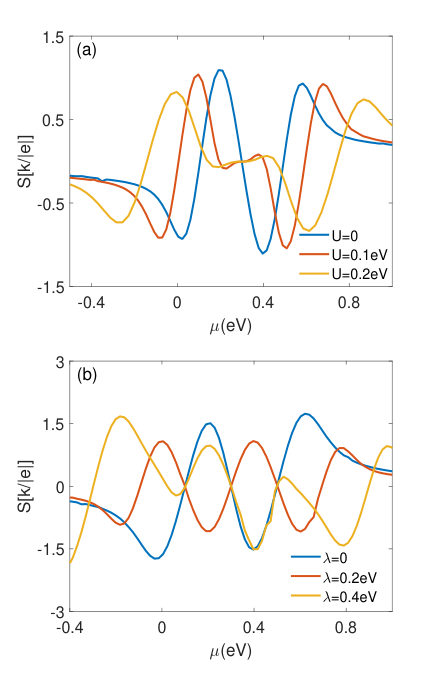
<figcaption class="paper-figure-caption"><b>Fig 2.</b> FIG. 3: The thermopower S as a function of the chemical potential µ in an unbiased Marcus SMJ computed at kT = 0.0126eV, Γ = 0.03eV, ǫ0 = 0.3eV, λ = 0.2eV (a) and U = 0.4eV (b).</figcaption>
</figure>
<figure class="paper-figure-card">

<figcaption class="paper-figure-caption"><b>Fig 3.</b> FIG. 2: Zero bias conductance computed for a Marcus SMJ asuming that kT = 0.026eV, Γ = ΓL = ΓR = 0.03eV, ǫ0 = 0.3eV, λ = 0.2eV (a) and U = 0.4eV (b). Insets show the occupation probabilities for the bridge states in the limit U → 0 (a) at U = 0.4eV (b). In the panel (c) the steady state current is presented as a function of the bias voltage  I0 = |e|Γ/ℏ  . The curves are plotted at several values of U and λ.</figcaption>
</figure>
<figure class="paper-figure-card">

<figcaption class="paper-figure-caption"><b>Fig 4.</b> FIG. 4: Power factor S2G as a function of the chemical potential of electrodes µ computed at zero bias voltage- computed at TL &gt; TR , kT = 0.0126eV, Γ = 0.03eV, ǫ0 = 0.3eV, λ = 0.2eV (a) and U = 0.4eV (b).</figcaption>
</figure>
</div>

<p><strong>Summary.</strong> This theoretical study models electron transport through molecular junctions, incorporating both Coulomb interactions and solvent reorganization effects. It demonstrates that these combined interactions significantly modify key thermoelectric metrics like the Seebeck coefficient and power factor. The findings highlight that electron-electron repulsion can counteract environmental reorganization, leading to complex, non-trivial behavior in the junction's electrical response.</p>
<p><strong>Why it may be interesting.</strong> This work bridges molecular electronics, charge transport, and many-body physics, which is highly relevant to open quantum systems and mesoscopic physics, particularly concerning energy dissipation and correlation effects in nanoscale devices.</p>
<details>
<summary>Detailed structure</summary>
<p><strong>Main problem.</strong> The study investigates how Coulomb interactions affect the thermoelectric properties of molecular junctions, especially when electron transport is strongly influenced by thermalized phonon modes in the surrounding molecular environment.</p>
<p><strong>Main result.</strong> The combined effects of electron-electron interactions and solvent reorganization can significantly alter the Seebeck coefficient and power factor, sometimes causing qualitative changes in conductance and thermopower.</p>
<p><strong>Method.</strong> The authors used a theoretical rate equation approach to determine steady-state probabilities and subsequently calculated the linear response coefficients for conductance and thermopower.</p>
<p><strong>Model / system.</strong> The model is a Single Molecular Junction (SMJ) where the linker is coupled to electrodes and interacts with a dielectric solvent. The physics incorporates Coulomb repulsion (U) and solvent reorganization energy (lambda).</p>
<p><strong>Key observables.</strong> Seebeck coefficient (S), power factor (S^2G), zero-bias conductance (G), and current-voltage (I-V) characteristics.</p>
<p><strong>Important parameters / regimes.</strong> Coulomb interaction strength (U), reorganization energy (lambda), and bias voltage/chemical potential (V or mu).</p>
<p><strong>Assumptions / limitations.</strong> The analysis assumes strong electron-phonon coupling, uses the Marcus theory framework, and operates in the linear response regime for thermal gradients.</p>
<p><strong>Figures summary.</strong> Figures illustrate how Coulomb interactions modify zero-bias conductance (showing multiple maxima/steps) and how thermopower and power factor vary with chemical potential.</p>
<p><strong>Paper structure.</strong> The paper establishes the physical model, derives rate equations for steady-state probabilities, calculates the current and linear response coefficients (G and S), and then analyzes the resulting dependence of thermoelectric properties on U and lambda.</p>
</details>
<details>
<summary>Abstract</summary>
<p>We present a theoretical study focused on the influence of Coulomb interactions on thermoelectric properties of molecular junctions assuming that electron transport is strongly affected by thermalized phonon modes in the molecular ambient. It is shown that the combined effect of Coulomb interactions between electrons on the molecular states and the reorganization processes in the ambient may significantly affect both Seebeck coefficient and the power factor. Specifically, we show that electron-electron interactions may counter-balance the effect of the ambient molecules reorganizations resulting in qualitative changes in the behavior of both zero-bias conductance and thermopower.</p>
</details>
<p><sub><a href="#top">↑ back to top</a></sub></p>

<p><a id="paper-2609.09611"></a></p>
<h3 id="twist-and-strain-identification-in-moire-heterostructures"><a href="http://arxiv.org/abs/2609.09611v1">Twist and strain identification in moiré heterostructures</a></h3>
<p><strong>Authors:</strong> Zhen Zhan, Federico Escudero, Dong Wang, Yiwen Liu, Ambikesh Gupta, Pierre A. Pantaleón, Francisco Guinea<br>
<strong>Type:</strong> theory · <strong>Category:</strong> strongly correlated electrons · <strong>PDF:</strong> <a href="https://arxiv.org/pdf/2609.09611v1">https://arxiv.org/pdf/2609.09611v1</a><br>
<strong>Analysis basis:</strong> full PDF text, analyzed in chunks
<strong>Topic relevance:</strong> <code>analog quantum simulation</code> <strong>2/5</strong> · <code>Keldysh / 2PI / non-Gaussian methods</code> <strong>1/5</strong></p>
<div class="figure-strip-hint">↔ Scroll figures horizontally</div>
<div class="paper-figures-scroll">
<figure class="paper-figure-card">

<figcaption class="paper-figure-caption"><b>Fig 1.</b> FIG. 1. Twist and strain identification of STM pattern with atomic resolution. (a) STM image (top panel) and dI/dV spectroscopy (bottom panel) measured at the spots marked with colored dots of TSBG moir´e pattern. Resonances at higher energy in AB regions are labeled with blue arrows. Inset: honeycomb lattice of the carbon atoms in the top layer. The scale bar in the inset is 1 nm. The results are adapted from Ref. [40]. (b) The generated moir´e pattern (top panel) using the twist and strain extracted from the experiment, and the calculated TB LDOS lines (bottom panel) at the AA (red dot) and AB (blue dot) regions. L1, L2 and L3 are the moir´e wavelengths.</figcaption>
</figure>
<figure class="paper-figure-card">
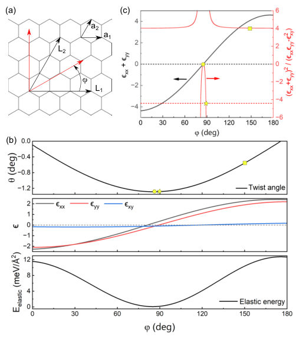
<figcaption class="paper-figure-caption"><b>Fig 2.</b> FIG. 2. Twist and strain solutions of sample two with moir´e resolution. (a) The definitions of the lattice vectors and moir´e vectors used to extract the twist and strain. We introduce the unknown orientation φ to the moir´e vectors and fix the graphene lattice vectors ai. This definition is equivalent to the way of introducing φ to ai and fixing the moir´e vectors. (b) All solutions of twist and strain for sample two with L1 = 10.56 nm, L2 = 10.65 nm, and L3 = 11.97 nm. (c) The strain components εxx+εyy (left black) and (TrE)2 /det E (right red) change with the global rotation φ. The traceless strain tensor (horizontal black dotted line) implies a pure shear solution (yellow dot). The...</figcaption>
</figure>
<figure class="paper-figure-card">
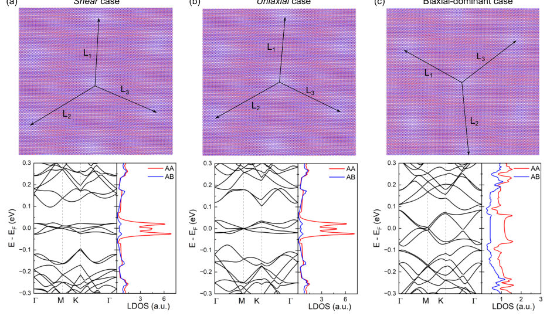
<figcaption class="paper-figure-caption"><b>Fig 3.</b> FIG. 3. Three solutions of sample two. The commensurate moir´e pattern (top panel), band structure and LDOS (bottom panel) of the (a) shear strain case, (b) uniaxial strain case, (c) biaxial-dominant strain case. The three solutions are illustrated with yellow symbols in Fig. 2. In the moir´e patterns, L1, L2 and L3 are moir´e wavelengths, which have a global rotation of φ relative to the x axis. The LDOS lines with red and blue colors are the properties calculated in the AA and AB regions. The electronic properties are calculated by the TB method with the commensurate details in Table I.</figcaption>
</figure>
<figure class="paper-figure-card">
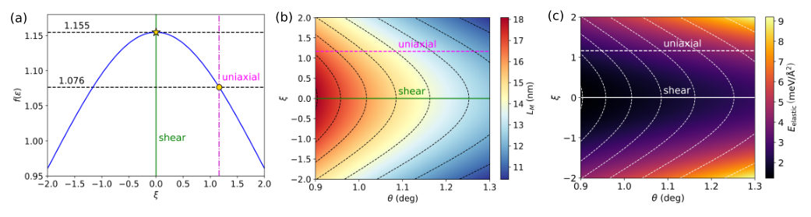
<figcaption class="paper-figure-caption"><b>Fig 4.</b> FIG. 4. Twist and strain solutions of sample three with equal moir´e lengths. (a) Plot of the function f (ξ), which determines the moir´e length LM for the strained triangular moir´e patterns. The green vertical line at ξ = 0 corresponds to the minimum (traceless) shear strain case, at which f takes its maximum value. The magenta line corresponds to the uniaxial strain solution. (b) Evolution of the moir´e length LM (θ, ξ), and (c) elastic energy, as a function of the twist angle θ and ξ. The dashed contour curves correspond to constant moir´e lengths LM from 11 to 18 nm. The horizontal lines correspond to the shear and uniaxial solutions.</figcaption>
</figure>
<figure class="paper-figure-card">

<figcaption class="paper-figure-caption"><b>Fig 5.</b> FIG. 5. Three solutions of sample three with equal moir´e length LM ≈13 nm. The commensurate moir´e pattern (top panels) and the LDOS for (a) the shear-strain case, (b) the mixed-strain case, and (c) the uniaxial-strain case. In the commensurate moir´e patterns, the three moir´e lengths are not equal due to the aligned assumption used to find the closest commensurate solutions in Sec. II C. The LDOS lines with red and blue colors are the properties calculated in the AA and AB regions. The electronic properties are calculated by the TB method with the commensurate solutions in Table II.</figcaption>
</figure>
</div>

<p><strong>Summary.</strong> This paper presents a general theoretical framework to accurately determine the twist and strain configurations in moiré heterostructures. It addresses the inherent ambiguity in extracting these parameters by incorporating physical constraints, such as minimizing elastic energy or analyzing electronic spectra. This methodology is crucial for engineering and understanding the exotic quantum electronic states found in these tunable 2D materials.</p>
<p><strong>Why it may be interesting.</strong> The strong dependence of electronic phases (like superconductivity) on geometric parameters (strain/twist) places this work at the intersection of condensed matter theory and tunable quantum materials, relevant to understanding emergent quantum states.</p>
<details>
<summary>Detailed structure</summary>
<p><strong>Main problem.</strong> The primary goal is to establish a general framework for accurately identifying the twist and strain configurations in moiré heterostructures, as their electronic properties are highly sensitive to these geometric parameters.</p>
<p><strong>Main result.</strong> The authors develop a comprehensive methodology that uses constraints like minimum elastic energy or electronic spectra to resolve the non-unique identification of twist and strain from moiré images.</p>
<p><strong>Method.</strong> The work combines continuum elasticity theory with geometric analysis, developing mathematical frameworks to relate strain tensors ($\mathbf{E}$) and lattice vectors to observable moiré patterns.</p>
<p><strong>Model / system.</strong> The study focuses on moiré materials, such as twisted bilayer graphene, where the electronic structure is governed by the interplay of twist angle and applied/induced strain (uniaxial, biaxial, or shear).</p>
<p><strong>Key observables.</strong> Strain tensor components ($\epsilon_{xx}, \epsilon_{yy}, \epsilon_{xy}$), moiré vectors ($\mathbf{G}_i$), and the resulting electronic properties (e.g., correlated insulating states).</p>
<p><strong>Important parameters / regimes.</strong> Twist angle ($  heta$), strain components, and the elastic energy functional ($E_{ ext{elastic}}$).</p>
<p><strong>Assumptions / limitations.</strong> The general approach aims to overcome the limitations of existing methods that often rely on simplifying assumptions like uniaxial heterostrain.</p>
<p><strong>Figures summary.</strong> Not specified by the notes, but the methodology involves deriving transformation matrices and analyzing strain tensor invariants.</p>
<p><strong>Paper structure.</strong> The paper builds from defining the physical problem (sensitivity to twist/strain) to developing the general mathematical framework, detailing strain tensor representations, and finally proposing methods using minimum elastic energy or electronic constraints to resolve ambiguity.</p>
</details>
<details>
<summary>Abstract</summary>
<p>The geometrical and electronic properties of moiré materials are highly sensitive to the twist and strain in the samples due to the moiré magnifying effect. Accurate identification of twist and strain in moiré materials is therefore essential. In this work, we establish a general framework to extract the twist and strain configurations from moiré images with either atomic or moiré scale resolution. With only moiré-wavelength information, we show that there is a continuous family of possible twist and strain configurations, each one accounting for different orientations of the moiré pattern. To estimate the most likely twist-strain configuration, we discuss additional constraints and methods involving the minimum elastic energy and the electronic spectra. The minimum elastic energy, in particular, reflects that shear configurations become much more favorable as the strain increases. As an example of the developed methodology, we discuss the formation and identification of strained triangular moiré patterns. Our framework provides a comprehensive approach to identify the twist and strain configurations in systems with moiré-scale resolution.</p>
</details>
<p><sub><a href="#top">↑ back to top</a></sub></p>

<p><a id="paper-2609.09347"></a></p>
<h3 id="fixed-mesh-based-approach-for-modeling-of-superconducting-magnetic-bearings"><a href="http://arxiv.org/abs/2609.09347v1">Fixed-mesh based approach for modeling of superconducting magnetic bearings</a></h3>
<p><strong>Authors:</strong> Elias Paakkunainen, Bárbara Maria Oliveira Santos, Gabriel dos Santos, Timo Tarhasaari, Paavo Rasilo, Sebastian Schöps<br>
<strong>Type:</strong> both · <strong>Category:</strong> numerical methods · <strong>PDF:</strong> <a href="https://arxiv.org/pdf/2609.09347v1">https://arxiv.org/pdf/2609.09347v1</a><br>
<strong>Analysis basis:</strong> full PDF text, analyzed in chunks
<strong>Topic relevance:</strong> <code>methods for driven-dissipative</code> <strong>2/5</strong></p>
<div class="figure-strip-hint">↔ Scroll figures horizontally</div>
<div class="paper-figures-scroll">
<figure class="paper-figure-card">

<figcaption class="paper-figure-caption"><b>Fig 1.</b> Figure 1: 3D representation of the copper-colored double-crossed loops of coated conductors over a magnetic guideway, in gray.</figcaption>
</figure>
<figure class="paper-figure-card">
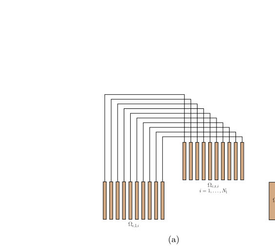
<figcaption class="paper-figure-caption"><b>Fig 2.</b> Figure 2: Illustration of a crossed loop cross-section (a) when all the CCs are resolved and (b) when homogenization is applied. The circuit coupling of the conducting domains is indicated for both cases.</figcaption>
</figure>
<figure class="paper-figure-card">
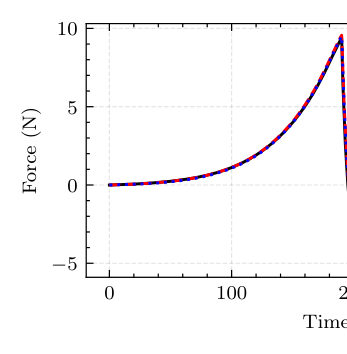
<figcaption class="paper-figure-caption"><b>Fig 3.</b> Figure 4: Comparison of the levitation force for the verification example. The simulated forces from the 2D models are scaled with a length of 67 mm to allow for comparison with the measured force from [7]. The maximum forces are for the measurements 9.37 N, for the fixed-mesh model 9.57 N, and for the remeshed model 9.48 N.</figcaption>
</figure>
<figure class="paper-figure-card">

<figcaption class="paper-figure-caption"><b>Fig 4.</b> Figure 5: Magnitude of the magnetic flux density for the verification example with the remeshed and fixed-mesh models. Left: The initial configuration for both the models at t = 0 s. Middle: The remeshed model at t = 120 s. Right: The fixed-mesh model at t = 120 s. The field plots have been zoomed in to show the HTS stacks and the PM.</figcaption>
</figure>
<figure class="paper-figure-card">

<figcaption class="paper-figure-caption"><b>Fig 5.</b> Figure 6: Mesh refinement study of the levitation force for the verification example. The force values are shown for the time t = 150 s. The number of degrees of freedom varies from 3.5k to 28.4k for the remeshed model and from 3.3k to 24.8k for the fixed- mesh model.</figcaption>
</figure>
</div>

<p><strong>Summary.</strong> This paper introduces a fixed-mesh finite element method to overcome the computational bottleneck of modeling superconducting magnetic bearings undergoing relative motion. By implementing a coordinate transformation within the material tensor rather than remeshing, the authors achieve high accuracy comparable to reference models while drastically reducing computational time and degrees of freedom.</p>
<p><strong>Why it may be interesting.</strong> While the physics is classical electromagnetism, the core contribution is a novel, efficient numerical technique for handling moving boundaries in FEM simulations, which has analogues in simulating time-dependent quantum systems or open quantum systems where boundary conditions change.</p>
<details>
<summary>Detailed structure</summary>
<p><strong>Main problem.</strong> The primary challenge is accurately and efficiently modeling the relative motion between superconducting components and a magnetic guideway in superconducting magnetic bearings (SMBs).</p>
<p><strong>Main result.</strong> The proposed fixed-mesh approach accurately predicts levitation forces, matching experimental results with high $R^2$ values, while being significantly more computationally efficient than traditional remeshing methods.</p>
<p><strong>Method.</strong> The authors developed a fixed-mesh Finite Element Method (FEM) approach by applying a coordinate transformation only to the air region, which is incorporated into a time-dependent anisotropic material tensor.</p>
<p><strong>Model / system.</strong> The system modeled is a superconducting magnetic bearing (SMB) involving high-temperature superconductors (HTS) and a magnetic guideway, analyzed using the $j$-$a$ formulation coupled with lumped-parameter electric circuits.</p>
<p><strong>Key observables.</strong> Levitation force ($f_x, f_y$), magnetic flux density magnitude ($|\vec{b}|$), and computational metrics (Degrees of Freedom, simulation time).</p>
<p><strong>Important parameters / regimes.</strong> The model utilizes superconducting material properties like critical current density ($j_c$) and incorporates homogenization techniques for coated conductors.</p>
<p><strong>Assumptions / limitations.</strong> The core assumption is that the effects of relative motion can be captured by modifying the material tensor (reluctivity) in the air region, thereby avoiding computationally expensive mesh updates.</p>
<p><strong>Figures summary.</strong> Figures illustrate the geometry of the SMB, compare resolved versus homogenized cross-sections, and show comparisons of the predicted levitation force against experimental measurements and reference models.</p>
<p><strong>Paper structure.</strong> The paper progresses from defining the physical problem and the need to avoid remeshing, detailing the fixed-mesh formulation via coordinate transformation, validating the approach against verification examples, and finally applying it to full SMB simulations, emphasizing computational gains.</p>
</details>
<details>
<summary>Abstract</summary>
<p>Numerical simulations of superconducting magnetic bearings (SMBs) are complicated by the relative motion between high temperature superconductors and the magnetic guideway, which commonly requires repeated updates of the geometry and mesh. We present a fixed-mesh based approach for modeling the motion induced effects in which a coordinate transformation is applied only to the air region between the moving regions. The transformation can be included in a time-dependent anisotropic material tensor, leaving the mesh during the simulation and the rest of the formulation unchanged. To provide numerical examples, the approach is implemented in 2D using the finite element method with the $j$-$a$ formulation and is combined with homogenization and circuit coupling for double-crossed loops of coated conductors. The open-source model implementations are made available. The proposed approach is verified and validated against existing modeling approaches and experimental results from the literature for SMBs. Two simulation examples are presented, and in both of them the levitation force predicted by the fixed-mesh model agrees with the experimental results, yielding $R^2$ values above 0.99. For a verification problem, it is shown that the fixed-mesh model converges towards the remeshed reference solution under mesh refinement as expected. For an SMB undergoing vertical and horizontal translations, the homogenized fixed-mesh model reproduces the lateral-force response of a fully resolved moving-geometry reference model. Additionally, the homogenized fixed-mesh model is computationally more efficient than the reference model, indicating a significant reduction in the number of degrees of freedom and the computation time. The results demonstrate accurate and computationally efficient simulation of translational motion with the fixed-mesh based approach.</p>
</details>
<p><sub><a href="#top">↑ back to top</a></sub></p>
<hr>
<p>
<a href="index.html">← Index</a>
 · <a href="papers_06.html">← Previous</a> · <a href="papers_08.html">Next →</a>
</p>
<hr>

</body>
</html>
